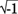
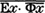
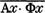
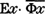
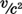
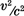
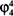

Notes
Preface to the English Edition
1. Éditions Odile Jacob, Paris, October 1997.
2. Henley (1997).
3. Maggiori (1997).
4. Sokal (1996a), reprinted here in Appendix A. The story of the hoax is described in more detail in Chapter 1 below.
5. Let us emphasize that our discussion is limited to epistemic/cognitive relativism; we do not address the more delicate issues of moral or aesthetic relativism.
6. This overlap is, however, not perfect. The French authors analyzed in this book are most fashionable, in the English-speaking world, in departments of literature, cultural studies and women’s studies. Epistemic relativism is distributed rather more broadly, and is widespread also in domains of anthropology, education and sociology of science that exhibit little interest in Lacan or Deleuze.
7. The politicians caught in flagrante delicto will also encourage this interpretation of the journalist’s intentions, for different (but obvious) reasons.
8. Marc Richelle, in his very interesting and balanced book (1998), expresses the fear that some readers (and especially non-readers) of our book will jump to the conclusion that all the social sciences are nonsense. But he is careful to emphasize that this is not our view.
9. Albert (1996, p. 69). We shall return to these political issues in the Epilogue.
10. Chapter 11 of the French original.
1. Introduction
1. We reprint this article in Appendix A, followed by some brief comments in Appendix B.
2. Among these criticisms, see for example Holton (1993), Gross and Levitt (1994), and Gross, Levitt, and Lewis (1996). The special issue of Social Text is introduced by Ross (1996). The parody is Sokal (1996a). The motivations for the parody are discussed in more detail in Sokal (1996c), which is reprinted here in Appendix C, and in Sokal (1997a). For earlier criticisms of postmodernism and social constructivism from a somewhat different political perspective—which are not, however, addressed in the Social Text issue—see e.g. Albert (1992–93), Chomsky (1992–93) and Ehrenreich (1992–93).
3. The hoax was revealed in Sokal (1996b). The scandal landed (to our utter surprise) on the front page of the New York Times (Scott 1996), the International Herald Tribune (Landsberg 1996), the [London] Observer (Ferguson 1996), Le Monde (Weill 1996), and several other major newspapers. Among the reactions, see in particular the analyses by Frank (1996), Pollitt (1996), Willis (1996), Albert (1996), Weinberg (1996a, 1996b), Boghossian (1996), and Epstein (1997).
4. See Sokal (1998) for a more detailed discussion.
5. In this book we have added Jean Baudrillard and Julia Kristeva to the list. Five of the ten “most important” French philosophers identified by Lamont (1987, note 4) are Baudrillard, Deleuze, Derrida, Lyotard, and Serres. Three of the six French philosophers chosen by Mortley (1991) are Derrida, Irigaray, and Serres. Five of the eight French philosophers interviewed by Rötzer (1994) are Baudrillard, Derrida, Lyotard, Serres, and Virilio. These same authors show up among the 39 Western thinkers interviewed by Le Monde (1984a, b), and one finds Baudrillard, Deleuze, Derrida, Irigaray, Kristeva, Lacan, Lyotard, and Serres among the 50 contemporary Western thinkers selected by Lechte (1994). Here the appellation “philosopher” is used in a broad sense; a more precise term would be “philosophico-literary intellectual”.
6. If we refrain from giving examples of good work in these fields—as some readers have suggested—it is because making an exhaustive such list would go far beyond our abilities, and a partial list would immediately bog us down in irrelevancies (why do you mention X and not Y?).
7. Several commentators (Droit 1997, Stengers 1997, Economist 1997) have compared us to schoolteachers giving poor grades in mathematics and physics to Lacan, Kristeva et al. But the analogy is faulty: in school one is obliged to study certain subjects, but no one forced these authors to invoke technical mathematical concepts in their writings.
8. The complete quote can be found in Derrida (1970, pp. 265–268).
9. See, nevertheless, Chapter 11 and here, here for some examples of more manifest abuses in Serres’ work.
10. To illustrate more clearly that their claims are taken seriously in at least some parts of the English-speaking academy, we shall cite secondary works that analyze and elaborate, for example, Lacan’s topology and mathematical logic, Irigaray’s fluid mechanics, and Deleuze and Guattari’s pseudo-scientific inventions.
11. The linguist Noam Chomsky illustrates this very well:
In my own professional work I have touched on a variety of different fields. I’ve done work in mathematical linguistics, for example, without any professional credentials in mathematics; in this subject I am completely self-taught, and not very well taught. But I’ve often been invited by universities to speak on mathematical linguistics at mathematics seminars and colloquia. No one has ever asked me whether I have the appropriate credentials to speak on these subjects; the mathematicians couldn’t care less. What they want to know is what I have to say. No one has ever objected to my right to speak, asking whether I have a doctor’s degree in mathematics, or whether I have taken advanced courses in this subject. That would never have entered their minds. They want to know whether I am right or wrong, whether the subject is interesting or not, whether better approaches are possible—the discussion dealt with the subject, not with my right to discuss it.
But on the other hand, in discussion or debate concerning social issues or American foreign policy, Vietnam or the Middle East, for example, the issue is constantly raised, often with considerable venom. I’ve repeatedly been challenged on grounds of credentials, or asked, what special training do you have that entitles you to speak of these matters. The assumption is that people like me, who are outsiders from a professional viewpoint, are not entitled to speak on such things.
Compare mathematics and the political sciences—it’s quite striking. In mathematics, in physics, people are concerned with what you say, not with your certification. But in order to speak about social reality, you must have the proper credentials, particularly if you depart from the accepted framework of thinking. Generally speaking, it seems fair to say that the richer the intellectual substance of a field, the less there is a concern for credentials, and the greater is the concern for content. (Chomsky 1979, pp. 6–7)
12. See, for example, Lévy-Leblond (1997) and Fuller (1998).
13. It would be interesting to attempt a similar project on the abuse of biology, computer science, or linguistics, but we leave that task to people more qualified than ourselves.
14. Let us mention in passing two examples of the latter type of critique, authored by one of us: a detailed analysis of the popular books of Prigogine and Stengers dealing with chaos, irreversibility and the arrow of time (Bricmont 1995a), and a criticism of the Copenhagen interpretation of quantum mechanics (Bricmont 1995b). In our opinion Prigogine and Stengers give the educated public a distorted view of the topics they treat, but their abuses do not even come close to those analyzed in this book. And the deficiencies of the Copenhagen interpretation are vastly subtler.
15. Eribon (1994, p. 70).
16. We shall return to these cultural and political themes in the Epilogue.
2. Jacques Lacan
17. A Möbius strip can be constructed taking a rectangular strip of paper, twisting one of the short sides by 180 degrees, and gluing it to the other short side. In this way, one produces a surface with only one face: “front” and “back” are connected by a continuous path.
18. A torus is the surface formed by a hollow tire. A Klein bottle is rather like a Möbius strip, but without an edge; to represent it concretely, one needs a Euclidean space of dimension at least four. The cross-cap (here called “cross-cut”, probably due to a transcription error) is yet another type of surface.
19. We have here corrected the translation of the word borné, which in the mathematical context means “bounded”.
20. According to the translator’s footnote as well as Roustang (1990, p. 87), the reference to “my discourse [from] last year” is to Lacan (1973). We have therefore reread this article and searched for the promised “demonstration” of “the strict equivalence between topology and structure”. Now, the article contains long (and frankly bizarre) meditations mixing topology, logic, psychoanalysis, Greek philosophy, and virtually everything else under the kitchen sink—we shall quote a brief excerpt below, see here—but concerning the alleged equivalence between topology and “structure”, one finds only the following:
Topology is not “made to guide us” in structure. This structure is it—as retroaction of the chain order of which language consists.
Structure is the aspherical concealed in the articulation of language insofar as an effect of subject takes hold of it.
It is clear that, as far as meaning is concerned, this “takes hold of it” of the sub-sentence—pseudo-modal—reverberates from the object itself which it wraps, as verb, in its grammatical subject, and that there is a false effect of meaning, a resonance of the imaginary induced by the topology, according to whether the effect of subject makes a whirlwind of asphere [sic] or the subjective of this effect “reflects” itself from it.
Here one must distinguish the ambiguity that inscribes itself from the meaning, that is, from the loop of the cut, and the suggestion of hole, that is, of structure, which makes sense of this ambiguity. (Lacan 1973, p. 40)
[Because Lacan’s language is so obscure, we reproduce also the original French text:]
La topologie n’est pas “faite pour nous guider” dans la structure. Cette structure, elle l’est—comme rétroaction de l’ordre de chaîne dont consiste le langage.
La structure, c’est l’asphérique recelé dans l’articulation langagière en tant qu’un effet de sujet s’en saisit.
Il est clair que, quant à la signification, ce “s’en saisit” de la sous-phrase, pseudo-modale, se répercute de l’objet même que comme verbe il enveloppe dans son sujet grammatical, et qu’il y a faux effet de sens, résonance de l’imaginaire induit de la topologie, selon que l’effet de sujet fait tourbillon d’asphère ou que le subjectif de cet effet s’en “réfléchit”.
Il y a ici à distinguer l’ambiguïté qui s’inscrit de la signification, soit de la boucle de la coupure, et la suggestion de trou, c’est-à-dire de structure, qui de cette ambiguïté fait sens. (Lacan 1973, p. 40)
If we leave aside Lacan’s mystifications, the relationship between topology and structure is easy to understand, but it depends upon what one means by “structure”. If this term is understood broadly—that is, as including linguistic and social structures as well as mathematical structures—then it clearly cannot be reduced to the purely mathematical notion of “topology”. If, on the other hand, one understands “structure” in its strictly mathematical sense, then one sees easily that topology is one type of structure, but that there exist many others: order structure, group structure, vector-space structure, manifold structure, etc.
21. If the last two sentences have a meaning, they have, in any case, nothing to do with geometry.
22. Compactness is an important technical concept in topology, but rather difficult to explain. Suffice it to say that in the nineteenth century, mathematicians (Cauchy, Weierstrass, and others) put mathematical analysis on a solid basis by giving a precise meaning to the concept of limit. These limits were initially used for sequences of real numbers, but it was slowly realized that the notion of limit should be extended to spaces of functions (for example, to study differential or integral equations). Topology was born circa 1900 in part through these studies. Now, among topological spaces one may distinguish a subclass called compact spaces, namely those in which every sequence of elements possesses a subsequence having a limit. (Here we have simplified somewhat, by limiting ourselves to metric spaces.) Another definition (which can be proven to be equivalent to the first one) relies on the intersection properties of infinite collections of closed sets. In the special case of subsets of finite-dimensional Euclidean spaces, a set is compact if and only if it is closed and bounded. Let us emphasize that all the italicized words above are technical terms having very precise definitions (which in general are based on a long chain of other definitions and theorems).
23. See note 19 above.
24. In this sentence, Lacan gives an incorrect definition of open set and a meaningless “definition” of limit. But these are minor points compared to the overall confusion of the discourse.
25. This paragraph is pure pedantry. Obviously, if a set is finite, one can, in principle, “count” it and “order” it. All the discussions in mathematics concerning countability (see note 38 below) or the possibility of ordering sets are motivated by infinite sets.
26. See note 19 above.
27. A number is called irrational if it cannot be written as a ratio of two integers: for example, the square root of two, or π. (By contrast, zero is an integer, hence unavoidably a rational number.) The imaginary numbers, on the other hand, are introduced as solutions of polynomial equations that have no solutions among the real numbers: for example, x2 + 1 = 0, one of whose solutions is denoted i =  and the other –i.
28. For an exegesis of Lacan’s “algorithm” that is almost as ridiculous as the original text, see Nancy and Lacoue-Labarthe (1992, part I, chapter 2).
29. This last sentence may be a rather confused allusion to a technical procedure used in mathematical logic to define the natural numbers in terms of sets: 0 is identified with the empty set ∅ (i.e. the set having no element); then 1 is identified with the set {∅} (i.e. the set having ∅ as its sole element); then 2 is identified with the set {∅, {∅}} (i.e. the set having the two elements ∅ and {∅}); and so forth.
30. The paradox to which Lacan is alluding here is due to Bertrand Russell (1872–1970). Let us begin by observing that most “normal” sets do not contain themselves as an element: for example, the set of all chairs is not itself a chair, the set of all whole numbers is not a whole number, etc. On the other hand, some sets do apparently contain themselves as an element: for example, the set of all abstract ideas is itself an abstract idea, the set of all sets is a set, etc. Consider now the set of all sets that do not contain themselves as an element. Does it contain itself? If the answer is yes, then it cannot belong to the set of all sets that do not contain themselves, and therefore the answer should be no. But if the answer is no, then it must belong to the set of all sets that do not contain themselves, and the answer should be yes. To escape from this paradox, logicians have replaced the naive concept of set by a variety of axiomatic theories.
31. This is perhaps an allusion to a different (though related) paradox, due to Georg Cantor (1845–1918), concerning the nonexistence of the “set of all sets”.
32. See e.g. Miller (1977/78) and Ragland-Sullivan (1990) for worshipful commentary on Lacan’s mathematical logic.
33. Because Lacan’s language is so obscure and frequently ungrammatical, we have reproduced the complete French text following our best attempt at a translation.
34. In mathematical logic, the symbol ∀x means “for all x”, and the symbol ∃x means “there exists at least one x such that”; they are called the “universal quantifier” and the “existential quantifier”, respectively. Further down in the text, Lacan writes Ax and Ex to denote the same concepts.
35. Just so. The bar ——— denotes negation (“it is false that”) and can thus be applied only to complete propositions, not to isolated quantifiers such as Ex or Ax. One might think that here Lacan means  and —which would in fact be logically equivalent to his starting propositions Ax· Φx and —but he makes clear that this banal rewriting is not his intention. Anyone is free to introduce a new notation, but he then has the obligation of explaining its meaning.
3. Julia Kristeva
36. One of Kristeva’s commentators, Toril Moi, explains the context:
In 1966 Paris witnessed not only the publication of Jacques Lacan’s Écrits and Michel Foucault’s Les Mots et les choses, but also the arrival of a young linguist from Bulgaria. At the age of 25, Julia Kristeva … took the Left Bank by storm.… Kristeva’s linguistic research was soon to lead to the publication of two important books, Le Texte du roman and Séméiotiké, and to culminate with the publication of her massive doctoral thesis, La Révolution du langage poétique, in 1974. This theoretical production earned her a chair in linguistics at the University of Paris VII. (Moi 1986, p. 1)
37. Here Kristeva seems to be appealing implicitly to the “Sapir-Whorf thesis” in linguistics, that is, grosso modo, the idea that our language radically conditions our view of the world. This thesis is nowadays sharply criticized by some linguists: see, for example, Pinker (1995, pp. 57–67).
38. The “power of the continuum” is a concept belonging to the mathematical theory of infinite sets, which was developed by Georg Cantor and other mathematicians starting in the 1870s. It turns out that there are many different “sizes” (or cardinalities) of infinite sets. Some infinite sets are termed countable (or denumerable): for example, the set of all positive integers (1, 2, 3,…) or, more generally, any set whose elements can be put into one-to-one correspondence with the set of all positive integers. On the other hand, Cantor proved in 1873 that there does not exist a one-to-one correspondence between the integers and the set of all real numbers. Therefore, the real numbers are in a certain sense “more numerous” than the integers: they are said to have the cardinality (or power) of the continuum, as do all those sets that can be put in one-to-one correspondence with them. Let us remark (what is at first surprising) that one can establish a one-to-one correspondence between the real numbers and the real numbers contained in an interval: for example, those numbers between 0 and 1, or those between 0 and 2, etc. More generally, every infinite set can be put into one-to-one correspondence with some of its proper subsets.
39. Translation ours. A slightly different translation of this excerpt and the next one can be found in Kristeva (1980, pp. 70–72).
40. In mathematics, the word “transfinite” is more or less synonymous with “infinite”. It is used most commonly to characterize a “cardinal number” or an “ordinal number”.
41. As we saw in note 38 above, there exist infinite sets of different “sizes” (called cardinals). The smallest infinite cardinal, called “countable” (or “denumerable”), is the one corresponding to the set of all positive integers. A larger cardinal, called the “cardinal of the continuum”, is the one corresponding to the set of all real numbers. The continuum hypothesis (CH), introduced by Cantor in the late nineteenth century, asserts that there is no “intermediate” cardinal between the countable and the continuum. The generalized continuum hypothesis (GCH) is an extension of this idea to vastly larger infinite sets. In 1964, Cohen proved that the CH (as well as the GCH) is independent of the other axioms of set theory, in the sense that neither it nor its negation is provable using those axioms.
42. This is a technical result of Gödel-Bernays set theory (one of the versions of axiomatic set theory). Kristeva does not explain its relevance for poetic language. Let us note in passing that to precede such a technical statement by the expression “as one knows” (on le sait) is a typical example of intellectual terrorism.
43. It is rather improbable that Lautréamont (1846–1870) could have “consciously practiced” a theorem of Gödel-Bernays set theory (developed between 1937 and 1940) or even of set theory tout court (developed after 1870 by Cantor and others).
44. Gödel, in his famous article (1931), proved two principal theorems concerning the incompleteness of certain formal systems (complex enough to encode elementary arithmetic) in mathematical logic. Gödel’s first theorem exhibits a proposition that is neither provable nor refutable in the given formal system, provided that this system is consistent. (One may nevertheless see, using reasoning that cannot be formalized within the system, that this proposition is true.) Gödel’s second theorem asserts that, if the system is consistent, it is impossible to prove this property by means that can be formalized within the system itself.
On the other hand, it is very easy to invent inconsistent (i.e. self-contradictory) systems of axioms; and, when a system is inconsistent, there always exists a proof of this inconsistency by means formalized within the system: although this proof may sometimes be difficult to find, it exists, almost by virtue of the definition of the word “inconsistent”.
For an excellent introduction to Gödel’s theorem, see Nagel and Newman (1958).
45. See note 31 above. It must be emphasized that no problem occurs for finite sets, such as the set of individuals in a society.
46. Nicolas Bourbaki is the pseudonym of a group of prominent French mathematicians who, since the late 1930s, have published about thirty volumes of their series, Elements of Mathematics. But, despite the title, these books are far from elementary. Whether or not Kristeva has read Bourbaki, this reference has no function other than to impress the reader.
47. The space C0(R3) is composed of all the real-valued continuous functions, defined on R3, that “tend to zero at infinity”. But, in the precise definition of this concept, Kristeva should have said: (a) |F(X)| instead of F(X); (b) “exceeds 1/n” instead of “exceeds n”; and (c) “containing all the continuous functions F on R3 such that” instead of “where for every continuous function F on R3”.
48. This malapropism probably arises from a combination of two mistakes: on the one hand, it seems that Kristeva has confused predicate logic with propositional logic; and on the other hand, she or her editors have apparently inserted the typographical error “proportional” (proportionnelle) in place of “propositional” (propositionnelle).
4. Intermezzo: Epistemic Relativism in the Philosophy of Science
49. There are, of course, many other sources of the relativist zeitgeist, from Romanticism to Heidegger, but we shall not deal with them here.
50. With, of course, many nuances about the meaning of the word “objective”, which are reflected, for instance, in the opposition between such doctrines as realism, conventionalism and positivism. Nevertheless, few scientists would be ready to admit that the whole of scientific discourse is a mere social construction. As one of us wrote, we have no desire to be the Emily Post of quantum field theory (Sokal 1996c, p. 94, reproduced here in Appendix C).
51. Limiting ourselves to the natural sciences and taking most of the examples from our own field, physics. We shall not deal with the delicate question of the scientificity of the various social sciences.
52. Bertrand Russell (1948, p. 196) tells the following amusing story: “I once received a letter from an eminent logician, Mrs Christine Ladd Franklin, saying that she was a solipsist, and was surprised that there were not others”. We learned this reference from Devitt (1997, p. 64).
53. To claim this does not mean that we claim to have an entirely satisfactory answer to the question of how such a correspondence between objects and perceptions is established.
54. This hypothesis receives a deeper explanation with the subsequent development of science, in particular of the biological theory of evolution. Clearly, the possession of sensory organs that reflect more or less faithfully the outside world (or, at least, some important aspects of it) confers an evolutionary advantage. Let us stress that this argument does not refute radical skepticism, but it does increase the coherence of the anti-skeptical worldview.
55. For example: Water appears to us as a continuous fluid, but chemical and physical experiments teach us that it is made of atoms.
56. Throughout this chapter, we stress the methodological continuity between scientific knowledge and everyday knowledge. This is, in our view, the proper way to respond to various skeptical challenges and to dispel the confusions generated by radical interpretations of correct philosophical ideas such as the underdetermination of theories by data. But it would be naive to push this connection too far. Science—particularly fundamental physics—introduces concepts that are hard to grasp intuitively or to connect directly to common-sense notions. (For example: forces acting instantaneously throughout the universe in Newtonian mechanics, electromagnetic fields “vibrating” in vacuum in Maxwell’s theory, curved space-time in Einstein’s general relativity.) And it is in discussions about the meaning of these theoretical concepts that various brands of realists and anti-realists (e.g., intrumentalists, pragmatists) tend to part company. Relativists sometimes tend to fall back on instrumentalist positions when challenged, but there is a profound difference between the two attitudes. Instrumentalists may want to claim either that we have no way of knowing whether “unobservable” theoretical entities really exist, or that their meaning is defined solely through measurable quantities; but this does not imply that they regard such entities as “subjective” in the sense that their meaning would be significantly influenced by extra-scientific factors (such as the personality of the individual scientist or the social characteristics of the group to which she belongs). Indeed, instrumentalists may regard our scientific theories as, quite simply, the most satisfactory way that the human mind, with its inherent biological limitations, is capable of understanding the world.
57. Expressed in a well-defined unit which is unimportant for the present discussion.
58. See Kinoshita (1995) for the theory, and Van Dyck et al. (1987) for the experiment. Crane (1968) provides a non-technical introduction to this problem.
59. Subject, of course, to many nuances on the precise meaning of the phrases “approximately true” and “objective knowledge of the natural world”, which are reflected in the diverse versions of realism and anti-realism (see note 56 above). For these debates, see for example Leplin (1984).
60. It is also by proceeding on a case-by-case basis that one can appreciate the immensity of the gulf separating the sciences from the pseudo-sciences.
61. We hasten to add—as if this should even be necessary—that we harbor no illusions about the behavior of real-life police forces, which are by no means always and exclusively dedicated to finding the truth. We employ this example solely to illustrate the abstract epistemological question in a simple concrete context, namely: Suppose that one does wish to find the truth about a practical matter (such as who committed a murder); how would one go about it? For an extreme example of this misreading—in which we are compared to former Los Angeles Detective Mark Fuhrman (of O.J. Simpson fame) and his infamous Brooklyn counterparts—see Robbins (1998).
62. We could go back to the Vienna Circle, but that would take us too far afield. Our analysis in this section is inspired in part by Putnam (1974), Stove (1982), and Laudan (1990b). After our book appeared in French, Tim Budden drew our attention to Newton-Smith (1981), where a similar critique of Popper’s epistemology can be found.
63. Popper (1959).
64. As we shall see below, whether an explanation is ad hoc or not depends strongly upon the context.
65. In this brief summary we have, of course, grossly oversimplified Popper’s epistemology: we have glossed over the distinction between observations, the Vienna-Circle notion of observation statements (which Popper criticizes), and Popper’s notion of basic statements; we have omitted Popper’s qualification that only reproducible effects can lead to falsification; and so forth. However, nothing in the subsequent discussion will be affected by these simplifications.
66. See also Stove (1982, p. 48) for similar quotes. Note that Popper calls a theory “corroborated” whenever it successfully passes falsification tests. But the meaning of this word is unclear; it cannot just be a synonym of “confirmed”, for otherwise the entire Popperian critique of induction would be empty. See Putnam (1974) for a more detailed discussion.
67. For example, he writes: “The proposed criterion of demarcation also leads us to a solution of Hume’s problem of induction—of the problem of the validity of natural laws.… [T]he method of falsification presupposes no inductive inference, but only the tautological transformations of deductive logic whose validity is not in dispute.” (Popper 1959, p. 42)
68. As Laplace wrote: “The learned world awaited with impatience this return which was to confirm one of the greatest discoveries that have been made in the sciences…” (Laplace 1902 [1825], p. 5)
69. For a detailed history, see, for example, Grosser (1962) or Moore (1996, chapters 2 and 3).
70. Let us emphasize that Popper himself is perfectly aware of the ambiguities associated with falsification. What he does not do, in our opinion, is to provide a satisfactory alternative to “naive falsificationism”—that is, one which would correct its defects while retaining at least some of its virtues.
71. See, for example, Putnam (1974). See also the reply of Popper (1974, pp. 993–999) and the response of Putnam (1978).
72. Note that the existence of such “dark” matter—invisible, though not necessarily undetectable by other means—is postulated in some contemporary cosmological theories, and these theories are not declared unscientific ipso facto.
73. The importance of theories in the interpretation of experiments has been emphasized by Duhem (1954 [1914], second part, chapter VI).
74. Let us emphasize that, in the foreword to the 1980 edition, Quine disavows the most radical reading of this passage, saying (correctly in our view) that “empirical content is shared by the statements of science in clusters and cannot for the most part be sorted out among them. Practically the relevant cluster is indeed never the whole of science” (p. viii).
75. As do some of Quine’s related assertions, such as: “Any statement can be held true come what may, if we make drastic enough adjustments elsewhere in the system. Even a statement very close to the periphery [i.e. close to direct experience] can be held true in the face of recalcitrant experience by pleading hallucination or by amending certain statements of the kind called logical laws.” (p. 43) Though this passage, taken out of context, might be read as an apologia for radical relativism, Quine’s discussion (pp. 43–44) suggests that this is not his intention, and that he thinks (again correctly in our view) that certain modifications of our belief systems in the face of “recalcitrant experiences” are much more reasonable than others.
76. Astronomers, beginning with Le Verrier in 1859, noticed that the observed orbit of the planet Mercury differs slightly from the orbit predicted by Newtonian mechanics: the discrepancy corresponds to a precession of the perihelion (point of closest approach to the Sun) of Mercury by approximately 43 seconds of arc per century. (This is an incredibly small angle: recall that one second of arc is 1/3600 of a degree, and one degree is 1/360 of the entire circle.) Various attempts were made to explain this anomalous behavior within the context of Newtonian mechanics: for example, by conjecturing the existence of a new intra-Mercurial planet (a natural idea, given the success of this approach with regard to Neptune). However, all attempts to detect this planet failed. The anomaly was finally explained in 1915 as a consequence of Einstein’s general theory of relativity. For a detailed history, see Roseveare (1982).
77. Indeed, the error could have been in one of the additional hypotheses and not in Newton’s theory itself. For example, the anomalous behavior of Mercury’s orbit could have been caused by an unknown planet, a ring of asteroids, or a small asphericity of the Sun. Of course, these hypotheses can and should be subjected to tests independent of Mercury’s orbit; but these tests depend in turn on additional hypotheses (concerning, for example, the difficulty of seeing a planet close to the Sun) that are not easy to evaluate. We are by no means suggesting that one can continue in this way ad infinitum—after a while, the ad hoc explanations become too bizarre to be acceptable—but this process may easily take half a century, as it did with Mercury’s orbit (see Roseveare 1982).
Besides, Weinberg (1992, pp. 93–94) notes that at the beginning of the twentieth century there were several anomalies in the mechanics of the solar system: not only in Mercury’s orbit, but also in the orbits of the Moon and of Halley’s and Encke’s comets. We know now that the latter anomalies were due to errors in the additional hypotheses—the evaporation of gases from comets and the tidal forces acting on the Moon were imperfectly understood—and that only Mercury’s orbit constituted a true falsification of Newtonian mechanics. But this was not at all evident at the time.
78. For example, Weinberg (1992, pp. 90–107) explains why the retrodiction of the orbit of Mercury was a much more convincing test of general relativity than the prediction of the deflection of starlight by the Sun. See also Brush (1989).
79. By way of analogy, consider Zeno’s paradox: it does not show that Achilles will not, in actual fact, catch the tortoise; it shows only that the concepts of motion and limit were not well understood in Zeno’s time. Likewise, we may very well practice science without necessarily understanding how we do it.
80. Let us emphasize that Duhem’s version of this thesis is much less radical than that of Quine. Note also that the term “Duhem-Quine thesis” is sometimes used to designate the idea (analyzed in the previous section) that observations are theory-laden. See Laudan (1990b) for a more detailed discussion of the ideas in this section.
81. For this section, see Shimony (1976), Siegel (1987), and especially Maudlin (1996) for more detailed critiques.
82. We shall also limit ourselves to The Structure of Scientific Revolutions (Kuhn 1962, 2nd ed. 1970). For two quite different analyses of Kuhn’s later ideas, see Maudlin (1996) and Weinberg (1996b, p. 56).
83. Speaking of “the image of science by which we are now possessed” and which is propagated, among others, by scientists themselves, he writes: “This essay attempts to show that we have been misled … in fundamental ways. Its aim is a sketch of the quite different concept of science that can emerge from the historical record of the research activity itself.” (Kuhn 1970, p. 1)
84. Of course, Kuhn does not explicitly deny this possibility, but he tends to emphasize the less empirical aspects that enter into the choice between theories: for example, that “sun worship … helped make Kepler a Copernician” (Kuhn 1970, p. 152).
85. Note that this assertion is much more radical than Duhem’s idea that observation depends in part on additional theoretical hypotheses.
86. Kuhn (1970, pp. 130–135).
87. Note also that Kuhn’s phrasing—“the percentage composition was different”—confuses facts with our knowledge of them. What changed, of course, is the chemists’ knowledge of (or beliefs about) the percentages, not the percentages themselves.
88. The historian thus rightly rejects “Whig history”: the history of the past rewritten as a forward march toward the present. However, this quite reasonable attitude ought not be confused with another, and rather dubious, methodological proscription, namely the refusal to use all the information available today (including scientific evidence) in order to draw the best possible inferences concerning history, on the pretext that this information was unavailable in the past. After all, art historians utilize contemporary physics and chemistry in order to determine provenance and authenticity; and these techniques are useful for art history even if they were unavailable in the era under study. For an example of similar reasoning in the history of science, see Weinberg (1996a, p. 15).
89. See, for example, the studies in Donovan et al. (1988).
90. [This note and the two following are added by us.] According to Aristotle, terrestrial matter is made of four elements—fire, air, water and earth—whose natural tendency is to rise (fire, air) or to fall (water, earth) according to their composition; while the Moon and other celestial bodies are made of a special element, “aether”, whose natural tendency is to follow a perpetual circular motion.
91. Ever since antiquity, it was observed that Venus is never very far from the Sun in the sky. In Ptolemy’s geocentric cosmology, this was explained by supposing ad hoc that Venus and the Sun revolve more or less synchronously around the Earth (Venus being closer). It follows that Venus should be seen always as a thin crescent, like the “new moon”. On the other hand, the heliocentric theory accounts naturally for the obervations by supposing that Venus orbits the Sun at a smaller radius than the Earth. It follows that Venus should, like the Moon, exhibit phases ranging from “new” (when Venus is on the same side of the Sun as the Earth) to almost “full” (when Venus is on the far side of the Sun). Since Venus appears to the naked eye as a point, it was not possible to distinguish empirically between these two predictions until telescopic observations by Galileo and his successors clearly established the existence of the phases of Venus. While this did not prove the heliocentric model (other theories were also able to explain the phases), it did give significant evidence in its favor, as well as strong evidence against the Ptolemaic model.
92. According to Newtonian mechanics, a swinging pendulum remains always in a single plane; this prediction holds, however, only with respect to a so-called “inertial frame of reference”, such as one fixed with respect to the distant stars. A frame of reference attached to the Earth is not precisely inertial, due to the Earth’s daily rotation around its axis. The French physicist Jean Bernard Léon Foucault (1819–1868) realized that the direction of swinging of a pendulum, seen relative to the Earth, would gradually precess, and that this can be understood as evidence for the Earth’s rotation. To see this, consider, for example, a pendulum located at the north pole. Its direction of swing will remain fixed relative to the distant stars, while the Earth rotates underneath it; therefore, relative to an observer on the Earth, its direction of swing will make one full rotation every 24 hours. At all other latitudes (except the equator), a similar effect holds but the precession is slower: for example, at the latitude of Paris (49° N), the precession is once every 32 hours. In 1851 Foucault demonstrated this effect, using a pendulum 67 meters long hung from the dome of the Panthéon. Shortly thereafter, the Foucault pendulum became a standard demonstration in science museums around the world.
93. This essay has thus far been published only in French translation. We thank Professor Maudlin for supplying us with the original English text.
94. It is worth noting that a similar argument was put forward by Feyerabend in the last edition of Against Method: “It is not enough to undermine the authority of the sciences by historical arguments: why should the authority of history be greater than that of, say, physics?” (Feyerabend 1993, p. 271) See also Ghins (1992, p. 255) for a similar argument.
95. This type of reasoning goes back at least to Hume’s argument against miracles: see Hume (1988 [1748], section X).
96. For example, in 1992 he wrote:
How can an enterprise [science] depend on culture in so many ways, and yet produce such solid results?… Most answers to this question are either incomplete or incoherent. Physicists take the fact for granted. Movements that view quantum mechanics as a turning-point in thought—and that include fly-by-night mystics, prophets of a New Age, and relativists of all sorts—get aroused by the cultural component and forget predictions and technology. (Feyerabend 1992, p. 29)
See also Feyerabend (1993, p. 13, note 12).
97. See, for example, Chapter 18 of Against Method (Feyerabend 1975). This chapter is not, however, included in the later editions of the book in English (Feyerabend 1988, 1993). See also Chapter 9 of Farewell to Reason (Feyerabend 1987).
98. For example, he writes: “Imre Lakatos, somewhat jokingly, called me an anarchist and I had no objection to putting on the anarchist’s mask.” (Feyerabend 1993, p. vii)
99. For example: “the main ideas of [this] essay … are rather trivial and appear trivial when expressed in suitable terms. I prefer more paradoxical formulations, however, for nothing dulls the mind as thoroughly as hearing familiar words and slogans.” (Feyerabend 1993, p. xiv) And also: “Always remember that the demonstrations and the rhetorics used do not express any ‘deep convictions’ of mine. They merely show how easy it is to lead people by the nose in a rational way. An anarchist is like an undercover agent who plays the game of Reason in order to undercut the authority of Reason (Truth, Honesty, Justice, and so on).” (Feyerabend 1993, p. 23) This passage is followed by a footnote referring to the Dadaist movement.
100. However, we take no position on the validity of the details of his historical analyses. See, for example, Clavelin (1994) for a critique of Feyerabend’s theses concerning Galileo.
Let us note also that several of his discussions of problems in modern physics are erroneous or grossly exaggerated: see, for example his claims concerning Brownian motion (Feyerabend 1993, pp. 27–29), renormalization (p. 46), the orbit of Mercury (pp. 47–49), and scattering in quantum mechanics (pp. 49–50n). To disentangle all these confusions would take too much space; but see Bricmont (1995a, p. 184) for a brief analysis of Feyerabend’s claims concerning Brownian motion and the second law of thermodynamics.
101. For a similar statement, see Feyerabend (1993, p. 33).
102. For example, it is said that the chemist Kekule (1829–1896) was led to conjecture (correctly) the structure of benzene as the result of a dream.
103. Feyerabend (1993, pp. 147–149).
104. For example, the anomalous behavior of Mercury’s orbit acquired a different epistemological status with the advent of general relativity (see notes 76–78 above).
105. A similar remark can be made about the classical distinction, also criticized by Feyerabend, between observational and theoretical statements. One should not be naive when saying that one “measures” something; nevertheless, there do exist “facts”—for example, the position of a needle on a screen or the characters on a computer printout—and these facts do not always coincide with our desires.
106. Feyerabend (1987, p. 263).
107. Reproduced in the second and third English editions.
108. For case studies in which scientists and historians of science explain the concrete mistakes contained in analyses by supporters of the strong programme, see, for example, Gingras and Schweber (1986), Franklin (1990, 1994), Mermin (1996a, 1996b, 1996c, 1997a), Gottfried and Wilson (1997), and Koertge (1998).
109. Barnes and Bloor (1981).
110. One could of course interpret these words as a mere description: people tend to call “true” what they believe. But, with that interpretation, the statement would be banal.
111. This example is adapted from Bertrand Russell’s critique of the pragmatism of William James and John Dewey: see Chapters 24 and 25 of Russell (1961a), in particular p. 779.
112. Barnes and Bloor (1981, p. 22).
113. A similar slippage arises in their use of the word “knowledge”. Philosophers usually understand “knowledge” to mean “justified true belief’ or some similar concept, but Bloor begins by offering a radical redefinition of the term:
Instead of defining it as true belief—or perhaps, justified true belief—knowledge for the sociologist is whatever people take to be knowledge. It consists of those beliefs which people confidently hold to and live by.… Of course knowledge must be distinguished from mere belief. This can be done by reserving the word ‘knowledge’ for what is collectively endorsed, leaving the individual and idiosyncratic to count as mere belief. (Bloor 1991, p. 5; see also Barnes and Bloor 1981, p. 22n)
However, only nine pages after enunciating this non-standard definition of “knowledge”, Bloor reverts without comment to the standard definition of “knowledge”, which he contrasts with “error”: “[I]t would be wrong to assume that the natural working of our animal resources always produces knowledge. They produce a mixture of knowledge and error with equal naturalness…” (Bloor 1991, p. 14).
114. Though one might have qualms about the hyper-scientistic attitude that human beliefs can always be explained causally, and about the assumption that we have at present adequate and well-verified principles of sociology and psychology that can be used for this purpose.
115. Elsewhere, Bloor does state explicitly that “Naturally there will be other types of causes apart from social ones which will cooperate in bringing about belief’ (Bloor 1991, p. 7). The trouble is that he fails to make explicit in what way natural causes will be allowed to enter into the explanation of belief, or what precisely will be left of the symmetry principle if natural causes are taken seriously. For a more detailed critique of Bloor’s ambiguities (from a philosophical point of view slightly different from ours), see Laudan (1981); see also Slezak (1994).
116. See, for example, Brunet (1931) and Dobbs and Jacob (1995).
117. Or more precisely: There is a vast body of extremely convincing astronomical evidence in support of the belief that the planets and comets do move (to a very high degree of approximation, though not exactly) as predicted by Newtonian mechanics; and if this belief is correct, then it is the fact of this motion (and not merely our belief in it) that forms part of the explanation of why the eighteenth-century European scientific community came to believe in the truth of Newtonian mechanics. Please note that all our assertions of fact—including “today in New York it’s raining”—should be glossed in this way.
118. For what it’s worth, these decisions can presumably be justified on Bayesian grounds, using our prior experience of the probability of finding elephants in lecture halls, of the incidence of psychosis, of the reliability of our own visual and auditory perceptions, and so forth.
119. Latour (1987). For a more detailed analysis of Science in Action, see Amsterdamska (1990). For a critical analysis of the later theses of Latour’s school (as well as of other trends in sociology of science), see Gingras (1995).
120. Re (b), the “homely example” in Gross and Levitt (1994, pp. 57–58) makes the point clearly.
121. The nuclear reactions that power the Sun are expected to emit copious quantities of the subatomic particle called the neutrino. By combining current theories of solar structure, nuclear physics, and elementary-particle physics, it is possible to obtain quantitative predictions for the flux and energy distribution of the solar neutrinos. Since the late 1960s, experimental physicists, beginning with the pioneering work of Raymond Davis, have been attempting to detect the solar neutrinos and measure their flux. The solar neutrinos have in fact been detected; but their flux appears to be less than one-third of the theoretical prediction. Astrophysicists and elementary-particle physicists are actively trying to determine whether the discrepancy arises from experimental error or theoretical error, and if the latter, whether the failure is in the solar models or in the elementary-particle models. For an introductory overview, see Bahcall (1990).
122. See, for example, Bahcall et al. (1996).
123. An even more extreme example of this confusion appears in a recent article by Latour in La Recherche, a French monthly magazine devoted to the popularization of science (Latour 1998). Here Latour discusses what he interprets as the discovery in 1976, by French scientists working on the mummy of the pharaoh Ramses II, that his death (circa 1213 B.C.) was due to tuberculosis. Latour asks: “How could he pass away due to a bacillus discovered by Robert Koch in 1882?” Latour notes, correctly, that it would be an anachronism to assert that Ramses II was killed by machine-gun fire or died from the stress provoked by a stock-market crash. But then, Latour wonders, why isn’t death from tuberculosis likewise an anachronism? He goes so far as to assert that “Before Koch, the bacillus has no real existence.” He dismisses the common-sense notion that Koch discovered a pre-existing bacillus as “having only the appearance of common sense”. Of course, in the rest of the article, Latour gives no argument to justify these radical claims and provides no genuine alternative to the common-sense answer. He simply stresses the obvious fact that, in order to discover the cause of Ramses’ death, a sophisticated analysis in Parisian laboratories was needed. But unless Latour is putting forward the truly radical claim that nothing we discover ever existed prior to its “discovery”—in particular, that no murderer is a murderer, in the sense that he committed a crime before the police “discovered” him to be a murderer—he needs to explain what is special about bacilli, and this he has utterly failed to do. The result is that Latour is saying nothing clear, and the article oscillates between extreme banalities and blatant falsehoods.
124. The principle applies with particular force when such a sociologist is studying contemporary science, because in this case there is no other scientific community besides the one under study who could provide such an independent assessment. By contrast, for studies of the distant past, one can take advantage of what subsequent scientists learned, including the results from experiments going beyond those originally performed. See note 88 above.
125. Nor would Steve Fuller, who asserts that “STS [Science and Technology Studies] practitioners employ methods that enable them to fathom both the ‘inner workings’ and the ‘outer character’ of science without having to be expert in the fields they study.” (Fuller 1993, p. xii)
126. See Chapter 6 below.
127. The so-called Sapir-Whorf thesis in linguistics appears to have played an important role in this evolution: see note 37 above. Note also that Feyerabend, in his autobiography (1995, pp. 151–152), disowned the radical-relativist use of the Sapir-Whorf thesis that he had made in Against Method (Feyerabend 1975, chapter 17).
128. The book’s senior author is Gérard Fourez, a philosopher of science who is very influential (at least in Belgium) in pedagogical matters, and whose book La Construction des sciences (1992) has been translated into several languages.
129. Note that this appears in a text that is supposed to enlighten high-school teachers.
130. Or, worse, minimizing the importance of facts, not by giving any argument, but simply by ignoring them in favor of consensus beliefs. Indeed, the definitions in this book systematically conflate facts, information, objectivity, and rationality with—or reduce them to—intersubjective agreement. Moreover, a similar pattern is found in Fourez’s La Construction des sciences (1992). For example (p. 37): “To be ‘objective’ means to follow instituted rules.… Being ‘objective’ is not the opposite of being ‘subjective’: rather, it is to be subjective in a certain way. But it is not to be individually subjective since one will follow socially instituted rules…”. This is highly misleading: following rules does not ensure objectivity in the usual sense (people who blindly repeat religious or political slogans certainly follow “socially instituted rules”, but they can hardly be called objective) and people can be objective while breaking many rules (e.g., Galileo).
131. Note also that defining “fact” as “there is hardly any controversy…” runs into a logical problem: Is the absence of controversy itself a fact? And if so, how to define it? By the absence of controversy about the assertion that there is no controversy? Obviously, Fourez and his colleagues are using in the social sciences a naively realist epistemology that they implicitly reject for the natural sciences. See p. 83–84 above for an analogous inconsistency in Feyerabend.
132. That is, the scientific view and the one based on traditional Vedic ideas. [Note added by us.]
5. Luce Irigaray
133. For good introductions to special and general relativity, see, for example, Einstein (1960 [1920]), Mermin (1989), and Sartori (1996).
134. During the 1920s, the astronomer Edwin Hubble discovered that the galaxies are moving away from the Earth, at speeds that are proportional to their distance from the Earth. Between 1927 and 1931, various physicists proposed explanations of this expansion within the framework of Einstein’s general relativity (without making the Earth a privileged center of observation) as arising from an initial cosmic “explosion”; this theory was later nicknamed the “Big Bang”. But, though the Big Bang hypothesis explains the observed expansion in a very natural way, it is not the only possible theory: towards the end of the 1940s, the astrophysicists Hoyle, Bondi, and Gold proposed the alternative theory of the “Steady State Universe”, according to which there is a general expansion without a primeval explosion (but with the continuous creation of new matter). However, in 1965, the physicists Penzias and Wilson discovered (by accident!) the cosmic microwave background radiation, whose spectrum and almost-isotropy turned out to be in complete agreement with the prediction based on general relativity for a “residue” from the Big Bang. In part because of this observation, but also for many other reasons, the Big Bang theory is today almost universally accepted among astrophysicists, though there is a lively debate on the details. For a nontechnical introduction to the Big Bang theory and the observational data supporting it, see Weinberg (1977), Silk (1989), and Rees (1997).
The “Reaves” to whom Irigaray refers is presumably Hubert Reeves, a Canadian astrophysicist living in France who has written several popular books on cosmology and astrophysics.
135. Except in the last millionth of a billionth of a billionth of a billionth of a billionth of a second, when quantum gravitational effects become important.
136. Hayles’ argument begins with an explanation of the important conceptual differences between linear differential equations and the nonlinear ones arising in fluid mechanics. It’s a respectable attempt at scientific journalism, albeit marred by a few errors (e.g. she confuses feedback with nonlinearity, and she asserts that Euler’s equation is linear). From this point on, however, her argument deteriorates into a caricature of postmodern lit-crit. Seeking to trace the historical development of fluid mechanics in the period 1650–1750, she claims to identify “a pair of hierarchical dichotomies [what else?!] in which the first term is privileged at the expense of the second: continuity versus rupture, and conservation versus dissipation.” (Hayles 1992, p. 22) There follows a rather confused discussion of the conceptual foundations of differential calculus, an imaginative (to say the least) exegesis of the “subliminal gender identifications” in early hydraulics, and a Freudian analysis of thermodynamics “from heat death to jouissance”. Hayles concludes by asserting a radically relativist thesis:
Despite their names, conservation laws are not inevitable facts of nature but constructions that foreground some experiences and marginalize others.… Almost without exception, conservation laws were formulated, developed, and experimentally tested by men. If conservation laws represent particular emphases and not inevitable facts, then people living in different kinds of bodies and identifying with different gender constructions might well have arrived at different models for flow. (Hayles 1992, pp. 31–32)
But she gives no argument to support her claim that the laws of conservation of energy and momentum, for example, might be other than “inevitable facts of nature”; nor does she give the slightest hint of what kinds of “different models for flow” might have been arrived at by “people living in different kinds of bodies”.
137. Hayles, who is in general favorable to Irigaray, notes that:
From talking with several applied mathematicians and fluid mechanicists about Irigaray’s claim, I can testify that they unanimously conclude she does not know the first thing about their disciplines. In their view, her argument is not to be taken seriously.
There is evidence to support this view. In a footnote to the chapter’s first page, Irigaray airily advises the reader “to consult some texts on solid and fluid mechanics” without bothering to mention any. The lack of mathematical detail in her argument forces one to wonder whether she has followed this advice herself. Nowhere does she mention a name or date that would enable one to connect her argument with a specific theory of fluids, much less to trace debates between opposing theories. (Hayles 1992, p. 17)
138. For a non-technical explanation of the concept of linearity (applied to an equation), see here.
139. The three preceding paragraphs, which supposedly concern mathematical logic, are devoid of meaning, with one exception: the assertion that “a preponderant role is left to … the universal quantifier” is meaningful and false (see note 143 below).
140. As we all learned in elementary school, the symbol “+” denotes the addition of two numbers. We are at a loss to explain how Irigaray got the idea that it indicates the “definition of a new term”.
141. We apologize to the reader for our pedantry: the negation of a proposition P is not “P or not P”, but simply “not P”.
142. This is presumably a typographical error; it occurs also in the original French and was overlooked by the translator. The conjunction of two propositions is, of course, “P and Q”.
143. To see this, let P(x) be any statement about an individual x. The proposition “for all x, P(x)” is equivalent to “there does not exist x such that P(x) is false”. Similarly, the proposition “there exists at least one x such that P(x)” is equivalent to “it is false that, for all x, P(x) is false”.
144. In actual fact, set theory (théorie des ensembles) studies the properties of “bare” sets, that is, sets without any topological or geometrical structure. The questions alluded to here by Irigaray belong rather to topology, geometry, and analysis.
145. Let us remark that the published English translation, quoted above, contains several errors. Théorie des ensembles is “set theory”, not “theory of wholes”. Ensembles flous presumably refers to the mathematical theory of “fuzzy sets”. Bords is best translated in the mathematical context as “boundaries”.
146. See, for example, Dieudonné (1989).
147. Let us remark that, in this passage, the word “linear” is used three times, inappropriately and with three different apparent intended meanings. See here for a discussion of abuses of the word “linear”.
148. Nor is this an isolated case. Hayles concludes her article on fluid mechanics by saying that
the experiences articulated in this essay are shaped by the struggle to remain within the bounds of rational discourse while still questioning some of its major premises. Whereas the flow of the argument has been female and feminist, the channel into which it has been directed is male and masculinist. (Hayles 1992, p. 40)
Hayles thus appears to accept, without the slightest hint of self-consciousness, the identification of “rational discourse” with “male and masculinist”.
149. Irigaray (1993, p. 203).
150. For some even more shocking statements in the same vein, see Irigaray (1987b, pp. 106–108).
6. Bruno Latour
151. Let us nevertheless quote the physicist Huth (1998), who has also made a critical analysis of Latour’s article: “In this article, the meanings of the terms ‘society’ and ‘abstraction’ are so stretched to fit his interpretation of relativity that they lose any semblance of common meaning, and shed no new light on the theory itself.”
152. For a good introduction to the theory of relativity, see, for example, Einstein (1960 [1920]), Mermin (1989), or Sartori (1996).
153. Indeed, by interpreting the collision of two protons with respect to the frame of reference attached to one of them, one can learn important things about the internal structure of protons.
154. Let us note in passing that Latour copies these equations incorrectly (p. 18, Figure 8). It should be  instead of  in the numerator of the last equation.
155. Mermin (1997b) points out, correctly, that certain technical arguments in the theory of relativity involve comparing three (or more) frames of reference. But this has nothing to do with Latour’s purported “third frame that collects the information sent by the two others”.
156. Let us note that Latour, like Lacan (see here), insists here on the literal validity of a comparison that could, at best, be taken as a vague metaphor.
157. This notion arises in Latour’s sociology.
158. Mermin (1997b).
159. Mermin doesn’t go that far: he concedes that “there are, to be sure, many obscure statements that appear to be about the physics of relativity, which may well be misconstruals of elementary technical points.” (Mermin 1997b, p. 13)
7. Intermezzo: Chaos Theory and “Postmodern Science”
160. Numerous examples of such texts are cited in Sokal’s parody (see Appendix A).
161. See also Bricmont (1995a) for a detailed study of confusions concerning the “arrow of time”.
162. Lyotard (1984, chapter 13).
163. In each cubic centimeter of air, there are approximately 2.7 × 1019 (= 27 billion billion) molecules.
164. Perrin (1990 [1913], pp. xii–xiv).
165. Ordinary (smooth) geometric objects can be classified according to their dimension, which is always a whole number: for example, the dimension of a straight line or a smooth curve is equal to 1, while that of a plane or a smooth surface is equal to 2. By contrast, fractal objects are more complicated, and need to be assigned several distinct “dimensions” to describe different aspects of their geometry. Thus, while the “topological dimension” of any geometrical object (smooth or not) is always a whole number, the “Hausdorff dimension” of a fractal object is in general not a whole number.
166. However, some physicists and mathematicians believe that the media hype surrounding these two theories has vastly exceeded their scientific accomplishments: see, for example, Zahler and Sussmann (1977), Sussmann and Zahler (1978), Kadanoff (1986) and Arnol’d (1992).
167. These are technical concepts from differential calculus: a function is called continuous if (here we are oversimplifying a bit) its graph can be drawn without taking the pencil off the paper, while a function is called differentiable if, at each point of its graph, there exists a unique tangent line. Let us note in passing that every differentiable function is automatically continuous, and that catastrophe theory is based on very beautiful mathematics concerning (ironically for Lyotard) differentiable functions.
168. “Non-rectifiable” is another technical term from differential calculus; it applies to certain non-differentiable curves.
169. See also Bouveresse (1984, pp. 125–130) for a critique along similar lines.
170. With one small qualification: Metatheorems in mathematical logic, such as Gödel’s theorem or independence theorems in set theory, have a logical status that is slightly different from that of conventional mathematical theorems. It should, however, be emphasized that these rarefied branches of the foundations of mathematics have very little impact on the bulk of mathematical research and almost no impact on the natural sciences.
171. For a deeper but still non-technical discussion, see Ruelle (1991).
172. At least to a very high degree of approximation.
173. Note that this does not rule out, a priori, the possibility of statistically predicting the future climate, such as the average and fluctuations in temperature and rainfall for England during the decade 2050–2060. Modelling the global climate is a difficult and controversial scientific problem, but is extremely important for the future of the human race.
174. In technical terms: in the first case the imprecision increases linearly or polynomially with time, and in the second case exponentially.
175. It is important to add one qualification: for some chaotic systems, the fixed amount that one gains when doubling the precision in the initial measurements can be very long, which means that in practice these systems can be predictable much longer than most non-chaotic systems. For example, recent research has shown that the orbits of some planets have a chaotic behavior, but the “fixed amount” is here of the order of several million years.
176. Kellert (1993) gives a clear introduction to chaos theory and a sober examination of its philosophical implications, although we do not agree with all of his conclusions.
177. Strange attractors, Lyapunov exponents, etc.
178. “Given for one instant an intelligence which could comprehend all the forces by which nature is animated and the respective situation of the beings who compose it—an intelligence sufficiently vast to submit these data to analysis—it would embrace in the same formula the movements of the greatest bodies of the universe and those of the lightest atom; for it, nothing would be uncertain and the future, as the past, would be present to its eyes.” (Laplace 1902 [1825], p. 4)
179. The purpose of quoting these remarks is, of course, to clarify the distinction between determinism and predictability, not to prove that determinism is true. Indeed, Maxwell himself was apparently not a determinist.
180. This verbal formulation actually confuses the problem of linearity with the very different problem of causality. In a linear equation, it is the set of all the variables that obeys a relation of proportionality. There is no need to specify which variables represent the “effect” and which the “cause”; and indeed, in many instances (for example, in systems with feedback) such a distinction is meaningless.
181. Often called total order.
182. [For the experts:] Here “natural” means “compatible with the field structure”, in the sense that a, b > 0 implies ab > 0, and a > b implies a + c > b + c.
183. Let us note in passing that it is false to assert that intuition plays no role in “traditional” science. Quite the contrary: since scientific theories are creations of the human mind and are almost never “written” in the experimental data, intuition plays an essential role in the creative process of invention of theories. Nevertheless, intuition cannot play an explicit role in the reasoning leading to the verification (or falsification) of these theories, since this process must remain independent of the subjectivity of individual scientists.
184. For example: “These [scientific] practices were rooted in a binary logic of hermetic subjects and objects and a linear, teleological rationality … Linearity and teleology are being supplanted by chaos models of non-linearity and an emphasis on historical contingency.” (Lather 1991, pp. 104–105)
“As opposed to more linear (historical and psychoanalytic as well as scientific) determinisms that tend to exclude them as anomalies outside the generally linear course of things, certain older determinisms incorporated chaos, incessant turbulence, sheer chance, in dynamic interactions cognate to modern chaos theory…” (Hawkins 1995, p. 49)
“Unlike teleological linear systems, chaotic models resist closure, breaking off instead into endless ‘recursive symmetries.’ This lack of closure privileges uncertainty. A single theory or ‘meaning’ disseminates into infinite possibilities … What we once considered to be enclosed by linear logic begins to open up to a surprising series of new forms and possibilities.” (Rosenberg 1992, p. 210)
Let us emphasize that we are not criticizing these authors for employing the word “linear” in their own sense: mathematics has no monopoly on the word. What we are criticizing is some postmodernists’ tendency to confuse their sense of the word with the mathematical one, and to draw connections with chaos theory that are not supported by any valid argument. Dahan-Dalmedico (1997) seems to miss this point.
185. For example, Harriett Hawkins refers to the “linear equations describing the regular, and therefore predictable movements of planets and comets” (Hawkins 1995, p. 31), and Steven Best alludes to “the linear equations used in Newtonian and even quantum mechanics” (Best 1991, p. 225); they commit the first mistake but not the second. Conversely, Robert Markley claims that “Quantum physics, hadron bootstrap theory, complex number theory [!], and chaos theory share the basic assumption that reality cannot be described in linear terms, that nonlinear—and unsolvable—equations are the only means possible to describe a complex, chaotic, and nondeterministic reality.” (Markley 1992, p. 264) This sentence deserves some sort of prize for squeezing the maximal number of confusions into the minimal number of words. See here for a brief discussion.
186. See Ruelle (1994) for a more detailed discussion.
187. For thoughtful critiques of applications of chaos theory in literature, see, for example, Matheson and Kirchhoff (1997) and van Peer (1998).
188. We do not deny that if one understood these systems better—enough to be able to write down equations that describe them at least approximately—the mathematical theory of chaos might provide interesting information. But sociology and history are, at present, far from having reached this stage of development (and perhaps will always remain so).
8. Jean Baudrillard
189. What is a non-Euclidean space? In Euclidean plane geometry—the geometry studied in high school—for each straight line L and each point p not on L, there exists one and only one straight line parallel to L (i.e., not intersecting L) that passes through p. By contrast, in non-Euclidean geometries, there can be either an infinite number of parallel lines or else none at all. These geometries go back to the works of Bolyai, Lobachevskii, and Riemann in the nineteenth century, and they were applied by Einstein in his general theory of relativity (1915). For a good introduction to non-Euclidean geometries (but without their military applications), see Greenberg (1980) or Davis (1993).
190. See our discussion (here) concerning abuses of the word “linear”.
191. To illustrate this concept, consider a collection of billiard balls moving on a table according to Newton’s laws (without friction and with elastic collisions), and make a film of this motion. Now run this film backwards: the reversed motion will also obey the laws of Newtonian mechanics. This fact is summarized by saying that the laws of Newtonian mechanics are invariant with respect to time inversion. In fact, all the known laws of physics, except those of the “weak interactions” between subatomic particles, satisfy this property of invariance.
192. The experiments of Benveniste’s group on the biological effects of highly diluted solutions, which seemed to provide a scientific basis for homeopathy, were rapidly discredited after being hastily published in the scientific journal Nature (Davenas et al. 1988). See Maddox et al. (1988); and, for a more detailed discussion, see Broch (1992). More recently, Baudrillard has opined that the memory of water is “the ultimate stage of the transfiguration of the world into pure information” and that “this virtualization of effects is wholly in line with the most recent science.” (Baudrillard 1997, p. 94)
193. Not at all! When zero is an attractor, it is what one calls a “fixed point”; these attractors (as well as others known as “limit-cycles”) have been known since the nineteenth century, and the expression “strange attractor” was introduced specifically to refer to attractors of a different sort. See, for example, Ruelle (1991).
194. Examples of the latter are variable refraction hyperspace and fractal scissiparity.
195. Gross and Levitt (1994, p. 80).
196. For other examples, see the references to chaos theory (Baudrillard 1990, pp. 154–155), to the Big Bang (Baudrillard 1994, pp. 115–116), and to quantum mechanics (Baudrillard 1996, pp. 14, 53–55). This last book is permeated with scientific and pseudo-scientific allusions.
197. For a more detailed critique of Baudrillard’s ideas, see Norris (1992).
9. Gilles Deleuze and Félix Guattari
198. Gödel: Deleuze and Guattari (1994, pp. 121, 137–139). Transfinite cardinals: Deleuze and Guattari (1994, pp. 120–121). Riemannian geometry: Deleuze and Guattari (1987, pp. 32, 373, 482–486, 556n). Deleuze and Guattari (1994, pp. 124, 161, 217). Quantum mechanics: Deleuze and Guattari (1994, pp. 129–130). These references are far from being exhaustive.
199. Indeed, Deleuze and Guattari, in a footnote, refer the reader to a book by Prigogine and Stengers, where one finds the following picturesque description of quantum field theory:
The quantum vacuum is the opposite of nothingness: far from being passive or inert, it potentially contains all possible particles. Unceasingly, these particles emerge out of the vacuum, only to disappear immediately. (Prigogine and Stengers 1988, p. 162)
A little later, Prigogine and Stengers discuss some theories on the origin of the universe that involve an instability of the quantum vacuum (in general relativity), and they add:
This description is reminiscent of the crystallization of a supercooled liquid (a liquid that has been cooled below its freezing temperature). In such a liquid, small crystalline kernels form, but they then dissolve without consequences. For such a kernel to unleash the process leading to the crystallization of the entire liquid, it has to reach a critical size that depends, in this case too, on a highly nonlinear cooperative mechanism called “nucleation”. (Prigogine and Stengers 1988, pp. 162–163)
The conception of “chaos” used by Deleuze and Guattari is thus a verbal mélange of a description of quantum field theory with a description of a supercooled liquid. These two branches of physics have no direct relation to chaos theory in its usual sense (namely, the theory of nonlinear dynamical systems).
200. Deleuze and Guattari (1994), p. 156 and note 14, and especially p. 206 and note 7.
201. For example: infinite, speed, particle, function, catalysis, particle accelerator, expansion, galaxy, limit, variable, abscissa, universal constant, contraction.
202. For example, the statement “the speed of light … where lengths contract to zero and clocks stop” is not false, but it may lead to confusion. In order to understand it correctly, one must already have a good knowledge of relativity theory.
203. For an amusing exegesis of the above passages, in the same vein as the original, see Alliez (1993, Chapter II).
204. This sentence repeats a confusion of Hegel (1989 [1812], pp. 251–253, 277–278), who considered that fractions such as y2/x were fundamentally different from fractions like a/b. As noted by the philosopher J.T. Desanti: “Such propositions could not but surprise a ‘mathematical mind’, who would be led to regard them as absurd.” (Desanti 1975, p. 43)
205. Which appear in the derivative dy/dx and in the integral ∫ f(x)dx.
206. For a historical account, see, for example, Boyer (1959 [1949], pp. 247–250, 267–277).
207. Further comments on calculus can be found in Deleuze (1994, pp. 43, 170–178, 182–183, 201, 209–211, 244, 264, 280–281). For additional lucubrations on mathematical concepts, mixing banalities with nonsense, see Deleuze (1994, pp. 179–181, 202, 232–234, 237–238); and on physics, see Deleuze (1994, pp. 117, 222–226, 228–229, 240, 318n).
208. The previous paragraph contains the following definition: “This procedure of the infinitely small, which maintains the distinction between essences (to the extent that one plays the role of inessential to the other), is quite different to contradiction. We should therefore give it a special name, that of ‘vice-diction’.” (Deleuze 1994, p. 46)
209. This is, at best, a very complicated way of saying that the traditional notation dy/dx denotes an object—the derivative of the function y(x)—which is not, however, the quotient of two quantities dy and dx.
210. In the calculus of functions of a single variable, integration is indeed the inverse of differentiation, up to an additive constant (at least for sufficiently smooth functions). The situation is more complicated for functions of several variables. Conceivably Deleuze is referring to this latter case, but if so, he is doing it in a very confused fashion.
211. The correct translation of the mathematical term “puissance du continu” is “power of the continuum”. See note 38 above for a brief explanation of this concept.
Deleuze notwithstanding, “limit” and “power of the continuum” are two completely distinct concepts. It is true that the idea of “limit” is related to the idea of “real number”, and that the set of the real numbers has the power of the continuum. But Deleuze’s formulation is, at best, exceedingly confused.
212. Quite true; and, as far as mathematics is concerned, such a rigorous exposition has existed for more than 150 years. One wonders why a philosopher would choose to ignore it.
213. This sentence repeats the confusion, going back to Hegel, mentioned in note 204 above.
214. This is an extremely pedantic way to introduce Taylor series, and we doubt that this passage could be understood by anyone who did not already know the subject. Furthermore, Deleuze (as well as Hegel) bases himself on an archaic definition of “function” (namely, by its Taylor series) that goes back to Lagrange (circa 1770) but which has been superseded ever since the work of Cauchy (1821). See, for example, Boyer (1959 [1949], pp. 251–253, 267–277).
215. See note 210 above.
216. For example: singularity, stable, unstable, metastable, potential energy, singular point, crystal, membrane, polarity, topological surface. A defender of Deleuze might contend that he is using these words here only in a metaphorical or philosophical sense. But in the next paragraph, Deleuze discusses “singularities” and “singular points” using mathematical terms taken from the theory of differential equations (cols, nœuds, foyers, centres) and continues by quoting, in a footnote, a passage of a book on differential equations that uses words like “singularity” and “singular point” in their technical mathematical sense. See also Deleuze (1990, pp. 50, 54, 339–340n). Deleuze is, of course, welcome to use these words in more than one sense if he likes, but in that case he should distinguish between the two (or more) senses and provide an argument explaining the relation between them.
217. This book is, in fact, densely filled with mathematical, scientific and pseudoscientific terminology, used most of the time in a completely arbitrary way.
218. For examples of academic articles that elaborate Deleuze and Guattari’s pseudo-science, see Rosenberg (1993), Canning (1994) and the recent academic conference devoted to “DeleuzeGuattari and Matter” (University of Warwick 1997).
10. Paul Virilio
219. As Revel (1997) has noted, dromos does not mean “speed”, but rather “course, race, running”; the Greek word for “speed” is tachos. Probably the error is Le Monde’s, because Virilio (1997, p. 22) gives the correct definition.
220. Translation ours. See note 221 below for a critique of the published English translations (Virilio 1993, p. 5 and 1997, p. 12).
221. Acceleration is the rate of change of velocity. This confusion is systematic in Virilio’s work: see, for example, Virilio (1997, pp. 31, 32, 43, 142). One of Virilio’s translators (Virilio 1993, p. 5) made things worse by rendering vitesse as “speed” rather than “velocity”. In English physics usage, “speed” designates the length of the velocity vector and thus can never be negative. The other translator (Virilio 1997, p. 12) tried to improve matters by inserting the words “vector quantities” (which do not appear in the French original) before “positive or negative velocities”; but this interpolation, while correct, leaves untouched the fundamental confusion between velocity and acceleration.
222. The book by Taylor and Wheeler (1966) gives a beautiful introduction to the notion of space-time interval.
223. Translation ours. See note 224 below for a critique of the published English translations (Virilio 1993, p. 6 and 1997, p. 13).
224. Virilio’s English translators—who can hardly be expected to possess a technical knowledge of physics—have likewise made a hash of this sentence. One rendered it as “A representation is defined by a sum of observables that are flickering back and forth” (Virilio 1993, p. 6), while the other came up with “A display is defined by a complete set of observables that commutate” (Virilio 1997, p. 13).
225. Here is how a book containing this essay of Virilio’s was lauded in an American journal of literary studies:
Re-thinking Technologies constitutes a significant contribution to the analysis of techno-cultures today. It will definitely contradict those who still think that postmodernity is merely a fashionable term or an empty fad. The nagging opinion that cultural and critical theory is “too abstract,” hopelessly removed from reality, devoid of ethical values and above all incompatible with erudition, systematic thinking, intellectual rigor and creative criticism, will simply be pulverized.… This collection assembles some of the most recent and fresh work by leading culture critics and theoreticians of the arts and sciences, such as Paul Virilio, Félix Guattari,… (Gabon 1994, pp. 119–120, emphasis added)
It is amusing to see the reviewer’s misunderstandings as he tries to understand (and thinks he understands) Virilio’s fantasies concerning relativity. We fear that more cogent arguments will be required to pulverize our own “nagging opinions”.
226. Particularly L’Espace critique (1984), L’Inertie polaire (1990) and La Vitesse de libération (1995). The first of these is translated as The Lost Dimension (1991), and the third as Open Sky (1997).
227. We have corrected a typographical error in the translation, in which “espace dromosphérique” was rendered as “dromospheric sphere” rather than “dromospheric space”.
228. See, for example, Nagel and Newman (1958).
11. Gödel’s Theorem and Set Theory: Some Examples of Abuse
229. Debray (1981, p. 10).
230. The text quoted here is relatively old; but one finds the same idea in Media Manifestos (1994, p. 12 and 1996a, p. 4). Subsequently, however, Debray seems to have retreated to a more prudent position: in a recent lecture (Debray 1996b) he admits that “Gödelitis is a widespread disease” (p. 6) and that “extrapolating a scientific result, and generalizing it outside of its specific field of relevance, can lead … to gross errors” (p. 7); he says also that his use of Gödel’s theorem is intended as “simply metaphorical or isomorphic” (p. 7).
231. Serres (1995, p. 451). See also Dhombres (1994, p. 195) for a critical remark on this “principle”.
232. Where one finds this gem: speaking of the Ancien Régime, Serres writes that “the clergy occupied a very precise place in society. Dominant and dominated, neither dominated nor dominant, this place, within each dominant or dominated class, belonged to neither one nor the other, to neither the dominated nor the dominant.” (Serres 1995, p. 453)
233. See here for a brief explanation of the axiom of choice.
234. See note 41 above for a brief explanation of the continuum hypothesis.
235. The French Maoist discourse of the late 1960s insisted on a sharp opposition between “politics”, which was supposed to be put in the commanding position, and trade unionism.
236. For what it’s worth, the “mathematics” in this paragraph are also rather meaningless.
12. Epilogue
237. We do not want to get involved in terminological disputes about the distinctions between “postmodernism”, “poststructuralism”, and so forth. Some writers use the term “poststructuralism” (or “anti-foundationalism”) to denote a particular collection of philosophical and social theories, and “postmodernism” (or “postmodernity”) to denote a wider set of trends in contemporary society. For simplicity, we shall use the term “postmodernism”, while emphasizing that we shall be concentrating on the philosophical and intellectual aspects and that the validity or invalidity of our arguments can in no way depend on the use of a word.
238. Indeed, we have no strong views on postmodernism in art, architecture, or literature.
239. See also Epstein (1997) for a useful distinction between the “weak” and “strong” versions of postmodernism.
240. This expression was apparently first used by Andrew Ross, one of the editors of Social Text, who asserted (rather tendentiously) that
the Science Wars [are] a second front opened up by conservatives cheered by the successes of their legions in the holy Culture Wars. Seeking explanations for their loss of standing in the public eye and the decline in funding from the public purse, conservatives in science have joined the backlash against the (new) usual suspects—pinkos, feminists and multiculturalists. (Ross 1995, p. 346)
Later, the phrase was used as the title of the special issue of Social Text in which Sokal’s hoax article appeared (Ross 1996).
241. See Feyerabend (1975, p. 308).
242. See, for example, Barnes, Bloor and Henry (1996, p. 141); and for a cogent critique, see Mermin (1998).
243. Which is not to say, of course, that they would not be profoundly modified, as chemistry was.
244. See Sokal (1998) for an extensive, though by no means exhaustive, list of what we see as valid tasks for the history and sociology of science.
245. We emphasize that what follows is not intended as a comprehensive list of the conditions for a fruitful dialogue between the natural and the human sciences, but simply as a reflection on the lessons to be drawn from the texts cited in this book. Many other criticisms can, of course, be made of both the natural and the human sciences, but they are beyond the scope of the present discussion.
246. As positive examples of this attitude, let us mention, among others, the works of Albert (1992) and Maudlin (1994) on the foundations of quantum mechanics.
247. To give just a few examples, let us mention Feynman (1965) in physics, Dawkins (1986) in biology, and Pinker (1995) in linguistics. We do not necessarily agree with everything these authors say, but we consider them models of clarity.
248. For similar observations, see the remarks of Noam Chomsky quoted by Barsky (1997, pp. 197–198).
249. We don’t want to be unduly pessimistic about the probable response to our book, but let us note that the story of the emperor’s new clothes ends as follows: “And the chamberlains went on carrying the train that wasn’t there.”
250. For example, a sociologist friend asked us, not unreasonably: Isn’t it contradictory for quantum mechanics to exhibit both “discontinuity” and “interconnectedness”? Aren’t these properties opposites? The brief answer is that these properties characterize quantum mechanics in very specific senses—which require a mathematical knowledge of the theory to be properly understood—and that, in these senses, the two notions do not contradict one another.
251. See, for example, Weinberg (1992, chapter III) and Weinberg (1995).
252. For a good illustration of the complexity of the interaction between observation and theory, see Weinberg (1992, chapter V) and Einstein (1949).
253. More recent, and even more extreme, examples of scientism can be found in the alleged “applications” of the theories of chaos, complexity, and self-organization to sociology, history, and business management.
254. Lyotard (1984, p. xxiv).
255. This last question is nevertheless rather subtle. All beliefs, even mythical ones, are constrained, at least in part, by the phenomena to which they refer. And, as we showed in Chapter 4, the “strong programme” in the sociology of science, which is a kind of anthropological relativism applied to contemporary science, goes astray precisely because it neglects this latter aspect, which plays a crucial role in the natural sciences.
256. Johnson (1996, p. C13). A more detailed exposition of Anyon’s views can be found in Anyon et al. (1996).
257. But probably not, because essentially identical views are expressed in Anyon et al. (1996).
258. During a debate at New York University, where this example was mentioned, many people seemed not to understand or accept this elementary remark. The problem presumably comes, at least in part, from the fact that they have redefined “truth” as a belief that is “locally accepted as such” or else as an “interpretation” that fulfills a given psychological and social role. It is difficult to say what shocks us the most: someone who believes that the creationist myths are true (in the usual sense of the word) or someone who adheres systematically to this redefinition of the word “true”. For a more detailed discussion of this example and in particular of the possible meanings of the word “valid”, see Boghossian (1996).
259. When challenged, relativist anthropologists sometimes deny that there is a distinction between knowledge (i.e. justified true belief) and mere belief, by denying that beliefs—even cognitive beliefs about the external world—can be objectively (trans-culturally) true or false. But it is hard to take such a claim seriously. Didn’t millions of Native Americans really die in the period following the European invasion? Is this merely a belief held to be true within some cultures?
260. Which is not to say that the student or the researcher cannot profit from reading classical texts. It all depends upon the pedagogical qualities of the authors in question. For example, physicists today can read Galileo and Einstein both for the sheer pleasure of their writing and for their deep insight. And biologists can certainly do likewise with Darwin.
261. Extreme versions of this idea can be found, for example, in Ross (1995) and Harding (1996).
262. But not only the left: see the quotation from Václav Havel on p. 192 above.
263. A similar observation holds when a famous individual holds ideas of type A and B.
264. For a more detailed discussion, see Eagleton (1995) and Epstein (1995, 1997).
265. Russell (1949 [1920], p. 80), reprinted in Russell (1961b, pp. 528–529).
266. For further analysis, see Epstein (1995, 1997).
267. See also Eagleton (1995).
268. For an example of such confusions, see the essay of Raskin and Bernstein (1987, pp. 69–103); and for a good dissection of these confusions, see the responses by Chomsky in the same volume (pp. 104–156).
269. It must nevertheless be emphasized that technology is often blamed for consequences that are due more to the social structure than to technology itself.
270. Let us note, in passing, that it is precisely the emphasis on objectivity and verification that offers the best protection against ideological bias masquerading as science.
271. According to recent polls, 47% of Americans believe in the creation account of Genesis, 49% in possession by the devil, 36% in telepathy, and 25% in astrology. Mercifully, only 11% believe in channeling, and 7% in the healing power of pyramids. For detailed data and references to the original sources, see Sokal (1996c, note 17), reprinted here in Appendix C.
272. See, for example, Chomsky (1992–93), Ehrenreich (1992–93), Albert (1992–93, 1996), and Epstein (1997) among many others.
273. Much further down in the New York Times article (Scott 1996), the reporter mentions Sokal’s leftist political positions and the fact that he taught mathematics in Nicaragua during the Sandinista government. But the contradiction is not even noticed, much less resolved.
274. Note, however, that postmodernists and relativists are ill-placed to criticize this threat to scientific objectivity, since they deny objectivity even as a goal.
275. This phenomenon is by no means due to postmodernism—Andreski (1972) illustrated it brilliantly for the traditional social sciences—and it is also present, to a much lesser extent, in the natural sciences. Nevertheless, the obscurity of postmodernist jargon, and its almost total lack of contact with concrete realities, exacerbate this situation.
276. Pollitt (1996).
277. In the French edition we wrote “but is undoubtedly somewhat passé there”, but contacts we have had since the publication of our book have led us to rethink. For example, Lacanianism is extraordinarily influential in French psychiatry.
278. See, for example, Kimball (1990) and D’Souza (1991).
279. The word “logically” is important here. In practice, some individuals use postmodern language while opposing racist or sexist discourses with perfectly rational arguments. We think, simply, that there is an incoherence here between their practice and their avowed philosophy (which may not be such a horrible thing).
280. Notably the feminist writers Barbara Ehrenreich and Katha Pollitt and the leftist filmmaker Michael Moore.
281. Accounts of the Left Conservatism conference can be found in Sand (1998), Willis et al. (1998), Dumm et al. (1998), and Zarlengo (1998).
282. Another encouraging sign is that some of the most insightful commentary has been produced by students, both in France (Coutty 1998) and in the U.S. (Sand 1998).
A. Transgressing the Boundaries: Toward a Transformative Hermeneutics of Quantum Gravity
*Originally published in Social Text #46/47 (spring/summer 1996), pp. 217–252. © Duke University Press.
1. Heisenberg (1958), Bohr (1963).
2. Kuhn (1970), Feyerabend (1975), Latour (1987), Aronowitz (1988b), Bloor (1991).
3. Merchant (1980), Keller (1985), Harding (1986, 1991), Haraway (1989, 1991), Best (1991).
4. Aronowitz (1988b, especially chaps. 9 and 12).
5. Ross (1991, introduction and chap. 1).
6. Irigaray (1985), Hayles (1992).
7. Harding (1986, especially chaps. 2 and 10); Harding (1991, especially chap. 4).
8. For a sampling of views, see Jammer (1974), Bell (1987), Albert (1992), Dürr, Goldstein and Zanghí (1992), Weinberg (1992, chap. IV), Coleman (1993), Maudlin (1994), Bricmont (1994).
9. Heisenberg (1958, pp. 15, 28–29), emphasis in Heisenberg’s original. See also Overstreet (1980), Craige (1982), Hayles (1984), Greenberg (1990), Booker (1990), and Porter (1990) for examples of cross-fertilization of ideas between relativistic quantum theory and literary criticism.
10. Unfortunately, Heisenberg’s uncertainty principle has frequently been misinterpreted by amateur philosophers. As Gilles Deleuze and Félix Guattari (1994, pp. 129–130) lucidly point out,
in quantum physics, Heisenberg’s demon does not express the impossibility of measuring both the speed and the position of a particle on the grounds of a subjective interference of the measure with the measured, but it measures exactly an objective state of affairs that leaves the respective position of two of its particles outside of the field of its actualization, the number of independent variables being reduced and the values of the coordinates having the same probability.… Perspectivism, or scientific relativism, is never relative to a subject: it constitutes not a relativity of truth but, on the contrary, a truth of the relative, that is to say, of variables whose cases it orders according to the values it extracts from them in its system of coordinates …
11. Bohr (1928), cited in Pais (1991, p. 314).
12. Aronowitz (1988b, pp. 251–256).
13. See also Porush (1989) for a fascinating account of how a second group of scientists and engineers—cyberneticists—contrived, with considerable success, to subvert the most revolutionary implications of quantum physics. The main limitation of Porush’s critique is that it remains solely on a cultural and philosophical plane; his conclusions would be immeasurably strengthened by an analysis of economic and political factors. (For example, Porush fails to mention that engineer-cyberneticist Claude Shannon worked for the then–telephone monopoly AT&T.) A careful analysis would show, I think, that the victory of cybernetics over quantum physics in the 1940s and 50s can be explained in large part by the centrality of cybernetics to the ongoing capitalist drive for automation of industrial production, compared to the marginal industrial relevance of quantum mechanics.
14. Pais (1991, p. 23). Aronowitz (1981, p. 28) has noted that wave-particle duality renders the “will to totality in modern science” severely problematic:
The differences within physics between wave and particle theories of matter, the indeterminacy principle discovered by Heisenberg, Einstein’s relativity theory, all are accommodations to the impossibility of arriving at a unified field theory, one in which the “anomaly” of difference for a theory which posits identity may be resolved without challenging the presuppositions of science itself.
For further development of these ideas, see Aronowitz (1988a, pp. 524–525, 533).
15. Heisenberg (1958, pp. 40–41).
16. Bohr (1934), cited in Jammer (1974, p. 102). Bohr’s analysis of the complementarity principle also led him to a social outlook which was, for its time and place, notably progressive. Consider the following excerpt from a 1938 lecture (Bohr 1958, p. 30):
I may perhaps here remind you of the extent to which in certain societies the roles of men and women are reversed, not only regarding domestic and social duties but also regarding behaviour and mentality. Even if many of us, in such a situation, might perhaps at first shrink from admitting the possibility that it is entirely a caprice of fate that the people concerned have their specific culture and not ours, and we not theirs instead of our own, it is clear that even the slightest suspicion in this respect implies a betrayal of the national complacency inherent in any human culture resting in itself.
17. Froula (1985).
18. Honner (1994).
19. Plotnitsky (1994). This impressive work also explains the intimate connections with Gödel’s proof of the incompleteness of formal systems and with Skolem’s construction of nonstandard models of arithmetic, as well as with Bataille’s general economy. For further discussion of Bataille’s physics, see Hochroth (1995).
20. Numerous other examples could be adduced. For instance, Barbara Johnson (1989, p. 12) makes no specific reference to quantum physics; but her description of deconstruction is an eerily exact summary of the complementarity principle:
Instead of a simple “either/or” structure, deconstruction attempts to elaborate a discourse that says neither “either/or”, nor “both/and” nor even “neither/nor”, while at the same time not totally abandoning these logics either.
See also McCarthy (1992) for a thought-provoking analysis that raises disturbing questions about the “complicity” between (nonrelativistic) quantum physics and deconstruction.
21. Permit me in this regard a personal recollection: Fifteen years ago, when I was a graduate student, my research in relativistic quantum field theory led me to an approach which I called “de[con]structive quantum field theory” (Sokal 1982). Of course, at that time I was completely ignorant of Jacques Derrida’s work on deconstruction in philosophy and literary theory. In retrospect, however, there is a striking affinity: my work can be read as an exploration of how the orthodox discourse (e.g. Itzykson and Zuber 1980) on scalar quantum field theory in four-dimensional space-time (in technical terms, “renormalized perturbation theory” for the  theory) can be seen to assert its own unreliability and thereby to undermine its own affirmations. Since then, my work has shifted to other questions, mostly connected with phase transitions; but subtle homologies between the two fields can be discerned, notably the theme of discontinuity (see Notes 22 and 81 below). For further examples of deconstruction in quantum field theory, see Merz and Knorr Cetina (1994).
22. Bohr (1928), cited in Jammer (1974, p. 90).
23. Bell (1987, especially chaps. 10 and 16). See also Maudlin (1994, chap. 1) for a clear account presupposing no specialized knowledge beyond high-school algebra.
24. Greenberger et al. (1989, 1990), Mermin (1990, 1993).
25. Aronowitz (1988b, p. 331) has made a provocative observation concerning nonlinear causality in quantum mechanics and its relation to the social construction of time:
Linear causality assumes that the relation of cause and effect can be expressed as a function of temporal succession. Owing to recent developments in quantum mechanics, we can postulate that it is possible to know the effects of absent causes; that is, speaking metaphorically, effects may anticipate causes so that our perception of them may precede the physical occurrence of a “cause.” The hypothesis that challenges our conventional conception of linear time and causality and that asserts the possibility of time’s reversal also raises the question of the degree to which the concept of “time’s arrow” is inherent in all scientific theory. If these experiments are successful, the conclusions about the way time as “clock-time” has been constituted historically will be open to question. We will have “proved” by means of experiment what has long been suspected by philosophers, literary and social critics: that time is, in part, a conventional construction, its segmentation into hours and minutes a product of the need for industrial discipline, for rational organization of social labor in the early bourgeois epoch.
The theoretical analyses of Greenberger et al. (1989, 1990) and Mermin (1990, 1993) provide a striking example of this phenomenon; see Maudlin (1994) for a detailed analysis of the implications for concepts of causality and temporality. An experimental test, extending the work of Aspect et al. (1982), will likely be forthcoming within the next few years.
26. Bohm (1980). The intimate relations between quantum mechanics and the mind-body problem are discussed in Goldstein (1983, chaps. 7 and 8).
27. Among the voluminous literature, the book by Capra (1975) can be recommended for its scientific accuracy and its accessibility to non-specialists. In addition, the book by Sheldrake (1981), while occasionally speculative, is in general sound. For a sympathetic but critical analysis of New Age theories, see Ross (1991, chap. 1). For a critique of Capra’s work from a Third World perspective, see Alvares (1992, chap. 6).
28. Bohr (1963, p. 2), emphasis in Bohr’s original.
29. Newtonian atomism treats particles as hyperseparated in space and time, backgrounding their interconnectedness (Plumwood 1993a, p. 125); indeed, “the only ‘force’ allowed within the mechanistic framework is that of kinetic energy—the energy of motion by contact—all other purported forces, including action at a distance, being regarded as occult” (Mathews 1991, p. 17). For critical analyses of the Newtonian mechanistic worldview, see Weil (1968, especially chap. 1), Merchant (1980), Berman (1981), Keller (1985, chaps. 2 and 3), Mathews (1991, chap. 1), and Plumwood (1993a, chap. 5).
30. According to the traditional textbook account, special relativity is concerned with the coordinate transformations relating two frames of reference in uniform relative motion. But this is a misleading oversimplification, as Latour (1988) has pointed out:
How can one decide whether an observation made in a train about the behaviour of a falling stone can be made to coincide with the observation made of the same falling stone from the embankment? If there are only one, or even two, frames of reference, no solution can be found since the man in the train claims he observes a straight line and the man on the embankment a parabola.… Einstein’s solution is to consider three actors: one in the train, one on the embankment and a third one, the author [enunciator] or one of its representants, who tries to superimpose the coded observations sent back by the two others.… [W]ithout the enunciator’s position (hidden in Einstein’s account), and without the notion of centres of calculation, Einstein’s own technical argument is ununderstandable … [pp. 10–11 and 35, emphasis in original]
In the end, as Latour wittily but accurately observes, special relativity boils down to the proposition that
more frames of reference with less privilege can be accessed, reduced, accumulated and combined, observers can be delegated to a few more places in the infinitely large (the cosmos) and the infinitely small (electrons), and the readings they send will be understandable. His [Einstein’s] book could well be titled: ‘New Instructions for Bringing Back Long-Distance Scientific Travellers’. [pp. 22–23]
Latour’s critical analysis of Einstein’s logic provides an eminently accessible introduction to special relativity for non-scientists.
31. Minkowski (1908), translated in Lorentz et al. (1952, p. 75).
32. It goes without saying that special relativity proposes new concepts not only of space and time but also of mechanics. In special relativity, as Virilio (1991, p. 136) has noted, “the dromospheric space, space-speed, is physically described by what is called the ‘logistic equation,’ the result of the product of the mass displaced by the speed of its displacement, MxV.” This radical alteration of the Newtonian formula has profound consequences, particularly in the quantum theory; see Lorentz et al. (1952) and Weinberg (1992) for further discussion.
33. Steven Best (1991, p. 225) has put his finger on the crux of the difficulty, which is that “unlike the linear equations used in Newtonian and even quantum mechanics, non-linear equations do [not] have the simple additive property whereby chains of solutions can be constructed out of simple, independent parts”. For this reason, the strategies of atomization, reductionism, and context-stripping that underlie the Newtonian scientific methodology simply do not work in general relativity.
34. Gödel (1949). For a summary of recent work in this area, see ‘t Hooft (1993).
35. These new notions of space, time and causality are in part foreshadowed already in special relativity. Thus, Alexander Argyros (1991, p. 137) has noted that
in a universe dominated by photons, gravitons, and neutrinos, that is, in the very early universe, the theory of special relativity suggests that any distinction between before and after is impossible. For a particle traveling at the speed of light, or one traversing a distance that is in the order of the Planck length, all events are simultaneous.
However, I cannot agree with Argyros’ conclusion that Derridean deconstruction is therefore inapplicable to the hermeneutics of early-universe cosmology: Argyros’ argument to this effect is based on an impermissibly totalizing use of special relativity (in technical terms, “light-cone coordinates”) in a context where general relativity is inescapable. (For a similar but less innocent error, see Note 40 below.)
36. Jean-François Lyotard (1989, pp. 5–6) has pointed out that not only general relativity, but also modern elementary-particle physics, imposes new notions of time:
In contemporary physics and astrophysics … a particle has a sort of elementary memory and consequently a temporal filter. This is why contemporary physicists tend to think that time emanates from matter itself, and that it is not an entity outside or inside the universe whose function it would be to gather all different times into universal history. It is only in certain regions that such—only partial—syntheses could be detected. There would on this view be areas of determinism where complexity is increasing.
Furthermore, Michel Serres (1992, pp. 89–91) has noted that chaos theory (Gleick 1987) and percolation theory (Stauffer 1985) have contested the traditional linear concept of time:
Time does not always flow along a line … or a plane, but along an extraordinarily complex manifold, as if it showed stopping points, ruptures, sinks [puits], funnels of overwhelming acceleration [cheminées d’accélération foudroyante], rips, lacunae, all sown randomly … Time flows in a turbulent and chaotic manner; it percolates. [Translation mine. Note that in the theory of dynamical systems, “puits” is a technical term meaning “sink”, i.e. the opposite of “source”.]
These multiple insights into the nature of time, provided by different branches of physics, are a further illustration of the complementarity principle.
37. General relativity can arguably be read as corroborating the Nietzschean deconstruction of causality (see e.g. Culler 1982, pp. 86–88), although some relativists find this interpretation problematic. In quantum mechanics, by contrast, this phenomenon is rather firmly established (see Note 25 above).
38. General relativity is also, of course, the starting point for contemporary astrophysics and physical cosmology. See Mathews (1991, pp. 59–90, 109–116, 142–163) for a detailed analysis of the connections between general relativity (and its generalizations called “geometrodynamics”) and an ecological worldview. For an astrophysicist’s speculations along similar lines, see Primack and Abrams (1995).
39. Discussion to Derrida (1970, pp. 265–266).
40. Derrida (1970, p. 267). Right-wing critics Gross and Levitt (1994, p. 79) have ridiculed this statement, willfully misinterpreting it as an assertion about special relativity, in which the Einsteinian constant c (the speed of light in vacuum) is of course constant. No reader conversant with modern physics—except an ideologically biased one—could fail to understand Derrida’s unequivocal reference to general relativity.
41. Luce Irigaray (1987, pp. 77–78) has pointed out that the contradictions between quantum theory and field theory are in fact the culmination of a historical process that began with Newtonian mechanics:
The Newtonian break has ushered scientific enterprise into a world where sense perception is worth little, a world which can lead to the annihilation of the very stakes of physics’ object: the matter (whatever the predicates) of the universe and of the bodies that constitute it. In this very science, moreover [d’ailleurs], cleavages exist: quantum theory/field theory, mechanics of solids/dynamics of fluids, for example. But the imperceptibility of the matter under study often brings with it the paradoxical privilege of solidity in discoveries and a delay, even an abandoning of the analysis of the infinity [l’in-fini] of the fields of force.
I have here corrected the translation of “d’ailleurs”, which means “moreover” or “besides” (not “however”).
42. Wheeler (1964).
43. Isham (1991, sec. 3.1.4).
44. Green, Schwarz and Witten (1987).
45. Ashtekar, Rovelli and Smolin (1992), Smolin (1992).
46. Sheldrake (1981, 1991), Briggs and Peat (1984, chap. 4), Granero-Porati and Porati (1984), Kazarinoff (1985), Schiffmann (1989), Psarev (1990), Brooks and Castor (1990), Heinonen, Kilpeläinen and Martio (1992), Rensing (1993). For an in-depth treatment of the mathematical background to this theory, see Thom (1975, 1990); and for a brief but insightful analysis of the philosophical underpinnings of this and related approaches, see Ross (1991, pp. 40–42, 253n).
47. Waddington (1965), Corner (1966), Gierer et al. (1978).
48. Some early workers thought that the morphogenetic field might be related to the electromagnetic field, but it is now understood that this is merely a suggestive analogy: see Sheldrake (1981, pp. 77, 90) for a clear exposition. Note also point (b) below.
49. Boulware and Deser (1975).
50. For another example of the “turf” effect, see Chomsky (1979, pp. 6–7).
51. To be fair to the high-energy-physics establishment, I should mention that there is also an honest intellectual reason for their opposition to this theory: inasmuch as it posits a subquantum interaction linking patterns throughout the universe, it is, in physicists’ terminology, a “non-local field theory”. Now, the history of classical theoretical physics since the early 1800s, from Maxwell’s electrodynamics to Einstein’s general relativity, can be read in a very deep sense as a trend away from action-at-a-distance theories and towards local field theories: in technical terms, theories expressible by partial differential equations (Einstein and Infeld 1961, Hayles 1984). So a non-local field theory definitely goes against the grain. On the other hand, as Bell (1987) and others have convincingly argued, the key property of quantum mechanics is precisely its non-locality, as expressed in Bell’s theorem and its generalizations (see Notes 23 and 24 above). Therefore, a non-local field theory, although jarring to physicists’ classical intuition, is not only natural but in fact preferred (and possibly even mandatory?) in the quantum context. This is why classical general relativity is a local field theory, while quantum gravity (whether string, weave, or morphogenetic field) is inherently non-local.
52. Differential topology is the branch of mathematics concerned with those properties of surfaces (and higher-dimensional manifolds) that are unaffected by smooth deformations. The properties it studies are therefore primarily qualitative rather than quantitative, and its methods are holistic rather than Cartesian.
53. Alvarez-Gaumé (1985). The alert reader will notice that anomalies in “normal science” are the usual harbinger of a future paradigm shift (Kuhn 1970).
54. Kosterlitz and Thouless (1973). The flowering of the theory of phase transitions in the 1970s probably reflects an increased emphasis on discontinuity and rupture in the wider culture: see Note 81 below.
55. Green, Schwarz and Witten (1987).
56. A typical such book is Nash and Sen (1983).
57. Lacan (1970, pp. 192–193), lecture given in 1966. For an in-depth analysis of Lacan’s use of ideas from mathematical topology, see Juranville (1984, chap. VII), Granon-Lafont (1985, 1990), Vappereau (1985) and Nasio (1987, 1992); a brief summary is given by Leupin (1991). See Hayles (1990, p. 80) for an intriguing connection between Lacanian topology and chaos theory; unfortunately she does not pursue it. See also Žižek (1991, pp. 38–39, 45–47) for some further homologies between Lacanian theory and contemporary physics. Lacan also made extensive use of concepts from set-theoretic number theory: see e.g. Miller (1977/78) and Ragland-Sullivan (1990).
58. In bourgeois social psychology, topological ideas had been employed by Kurt Lewin as early as the 1930s, but this work foundered for two reasons: first, because of its individualist ideological preconceptions; and second, because it relied on old-fashioned point-set topology rather than modern differential topology and catastrophe theory. Regarding the second point, see Back (1992).
59. Althusser (1993, p. 50): “Il suffit, à cette fin, de reconnaître que Lacan confère enfin à la pensée de Freud, les concepts scientifiques qu’elle exige”. This famous essay on “Freud and Lacan” was first published in 1964, before Lacan’s work had reached its highest level of mathematical rigor. It was reprinted in English translation in New Left Review (Althusser 1969).
60. Miller (1977/78, especially pp. 24–25). This article has become quite influential in film theory: see e.g. Jameson (1982, pp. 27–28) and the references cited there. As Strathausen (1994, p. 69) indicates, Miller’s article is tough going for the reader not well versed in the mathematics of set theory. But it is well worth the effort. For a gentle introduction to set theory, see Bourbaki (1970).
61. Dean (1993, especially pp. 107–108).
62. Homology theory is one of the two main branches of the mathematical field called algebraic topology. For an excellent introduction to homology theory, see Munkres (1984); or for a more popular account, see Eilenberg and Steenrod (1952). A fully relativistic homology theory is discussed e.g. in Eilenberg and Moore (1965). For a dialectical approach to homology theory and its dual, cohomology theory, see Massey (1978). For a cybernetic approach to homology, see Saludes i Closa (1984).
63. For the relation of homology to cuts, see Hirsch (1976, pp. 205–208); and for an application to collective movements in quantum field theory, see Caracciolo et al. (1993, especially app. A.1).
64. Jones (1985).
65. Witten (1989).
66. James (1971, pp. 271–272). It is, however, worth noting that the space RP3 is homeomorphic to the group SO(3) of rotational symmetries of conventional three-dimensional Euclidean space. Thus, some aspects of three-dimensional Euclidicity are preserved (albeit in modified form) in the postmodern physics, just as some aspects of Newtonian mechanics were preserved in modified form in Einsteinian physics.
67. Kosko (1993). See also Johnson (1977, pp. 481–482) for an analysis of Derrida’s and Lacan’s efforts toward transcending the Euclidean spatial logic.
68. Along related lines, Eve Seguin (1994, p. 61) has noted that “logic says nothing about the world and attributes to the world properties that are but constructs of theoretical thought. This explains why physics since Einstein has relied on alternative logics, such as trivalent logic which rejects the principle of the excluded middle.” A pioneering (and unjustly forgotten) work in this direction, likewise inspired by quantum mechanics, is Lupasco (1951). See also Plumwood (1993b, pp. 453–459) for a specifically feminist perspective on nonclassical logics. For a critical analysis of one nonclassical logic (“boundary logic”) and its relation to the ideology of cyberspace, see Markley (1994).
69. Irigaray (1987, pp. 76–77), essay originally appeared in French in 1982. Irigaray’s phrase “théorie des ensembles” can also be rendered as “theory of sets”, and “bords” is usually translated in the mathematical context as “boundaries”. Her phrase “ensembles flous” may refer to the new mathematical field of “fuzzy sets” (Kaufmann 1973, Kosko 1993).
70. See e.g. Hamza (1990), McAvity and Osborn (1991), Alexander, Berg, and Bishop (1993) and the references cited therein.
71. Green, Schwarz, and Witten (1987).
72. Hamber (1992), Nabutosky and Ben-Av (1993), Kontsevich (1994).
73. In the history of mathematics there has been a long-standing dialectic between the development of its “pure” and “applied” branches (Struik 1987). Of course, the “applications” traditionally privileged in this context have been those profitable to capitalists or useful to their military forces: for example, number theory has been developed largely for its applications in cryptography (Loxton 1990). See also Hardy (1967, pp. 120–121, 131–132).
74. The equal representation of all boundary conditions is also suggested by Chew’s bootstrap theory of “subatomic democracy”: see Chew (1977) for an introduction, and see Morris (1988) and Markley (1992) for philosophical analysis.
75. Among the large body of works from a diversity of politically progressive perspectives, the books by Merchant (1980), Keller (1985), Harding (1986), Aronowitz (1988b), Haraway (1991), and Ross (1991) have been especially influential. See also the references cited below.
76. Madsen and Madsen (1990, p. 471). The main limitation of the Madsen-Madsen analysis is that it is essentially apolitical; and it hardly needs to be pointed out that disputes over what is true can have a profound effect on, and are in turn profoundly affected by, disputes over political projects. Thus, Markley (1992, p. 270) makes a point similar to that of Madsen-Madsen, but rightly situates it in its political context:
Radical critiques of science that seek to escape the constraints of deterministic dialectics must also give over narrowly conceived debates about realism and truth to investigate what kind of realities—political realities—might be engendered by a dialogical bootstrapping. Within a dialogically agitated environment, debates about reality become, in practical terms, irrelevant. “Reality,” finally, is a historical construct.
See Markley (1992, pp. 266–272) and Hobsbawm (1993, pp. 63–64) for further discussion of the political implications.
77. Madsen and Madsen (1990, pp. 471–472).
78. Aronowitz (1988b, pp. 292–293) makes a slightly different, but equally cogent, criticism of quantum chromodynamics (the currently hegemonic theory representing nucleons as permanently bound states of quarks and gluons): drawing on the work of Pickering (1984), he notes that
in his [Pickering’s] account, quarks are the name assigned to (absent) phenomena that cohere with particle rather than field theories, which, in each case, offer different, although equally plausible, explanations for the same (inferred) observation. That the majority of the scientific community chose one over another is a function of scientists’ preference for the tradition rather than the validity of explanation.
However, Pickering does not reach back far enough into the history of physics to find the basis of the research tradition from which the quark explanation emanates. It may not be found inside the tradition but in the ideology of science, in the differences behind field versus particle theories, simple versus complex explanations, the bias toward certainty rather than indeterminateness.
Along very similar lines, Markley (1992, p. 269) observes that physicists’ preference for quantum chromodynamics over Chew’s bootstrap theory of “subatomic democracy” (Chew 1977) is a result of ideology rather than data:
It is not surprising, in this regard, that bootstrap theory has fallen into relative disfavor among physicists seeking a GUT (Grand Unified Theory) or TOE (Theory of Everything) to explain the structure of the universe. Comprehensive theories that explain “everything” are products of the privileging of coherence and order in western science. The choice between bootstrap theory and theories of everything that confronts physicists does not have to do primarily with the truth-value offered by these accounts of available data but with the narrative structures—indeterminate or deterministic—into which these data are placed and by which they are interpreted.
Unfortunately, the vast majority of physicists are not yet aware of these incisive critiques of one of their most fervently-held dogmas.
For another critique of the hidden ideology of contemporary particle physics, see Kroker et al. (1989, pp. 158–162, 204–207). The style of this critique is rather too Baudrillardian for my staid taste, but the content is (except for a few minor inaccuracies) right on target.
79. Ross (1991, p. 29). For an amusing example of how this modest demand has driven right-wing scientists into fits of apoplexy (“frighteningly Stalinist” is the chosen epithet), see Gross and Levitt (1994, p. 91).
80. Oliver (1989, p. 146).
81. While chaos theory has been deeply studied by cultural analysts—see e.g. Hayles (1990, 1991), Argyros (1991), Best (1991), Young (1991, 1992), Assad (1993), among many others—the theory of phase transitions has passed largely unremarked. (One exception is the discussion of the renormalization group in Hayles (1990, pp. 154–158).) This is a pity, because discontinuity and the emergence of multiple scales are central features in this theory; and it would be interesting to know how the development of these themes in the 1970s and afterwards is connected to trends in the wider culture. I therefore suggest this theory as a fruitful field for future research by cultural analysts. Some theorems on discontinuity which may be relevant to this analysis can be found in Van Enter, Fernández, and Sokal (1993).
82. Irigaray (1985), Hayles (1992). See, however, Schor (1989) for a critique of Irigaray’s undue deference toward conventional (male) science, particularly physics.
83. Thom (1975, 1990), Arnol’d (1992).
84. Concerning the Cartesian/Baconian metaphysics, Robert Markley (1991, p. 6) has observed that
Narratives of scientific progress depend upon imposing binary oppositions—true/false, right/wrong—on theoretical and experimental knowledge, privileging meaning over noise, metonymy over metaphor, monological authority over dialogical contention.… [T]hese attempts to fix nature are ideologically coercive as well as descriptively limited. They focus attention only on the small range of phenomena—say, linear dynamics—which seem to offer easy, often idealized ways of modeling and interpreting humankind’s relationship to the universe.
While this observation is informed primarily by chaos theory—and secondarily by nonrelativistic quantum mechanics—it in fact summarizes beautifully the radical challenge to modernist metaphysics posed by quantum gravity.
85. Capra (1988, p. 145). One caveat: I have strong reservations about Capra’s use here of the word “cyclical”, which if interpreted too literally could promote a politically regressive quietism. For further analyses of these issues, see Bohm (1980), Merchant (1980, 1992), Berman (1981), Prigogine and Stengers (1984), Bowen (1985), Griffin (1988), Kitchener (1988), Callicott (1989, chaps. 6 and 9), Shiva (1990), Best (1991), Haraway (1991, 1994), Mathews (1991), Morin (1992), Santos (1992), and Wright (1992).
86. Markley (1992, p. 264). A minor quibble: It is not clear to me that complex number theory, which is a new and still quite speculative branch of mathematical physics, ought to be accorded the same epistemological status as the three firmly established sciences cited by Markley.
87. See Wallerstein (1993, pp. 17–20) for an incisive and closely analogous account of how the postmodern physics is beginning to borrow ideas from the historical social sciences; and see Santos (1989, 1992) for a more detailed development.
88. Aronowitz (1988b, p. 344).
89. At this point, the traditional scientist’s response is that work not conforming to the evidentiary standards of conventional science is fundamentally irrational, i.e. logically flawed and therefore not worthy of credence. But this refutation is insufficient: for, as Porush (1993) has lucidly observed, modern mathematics and physics have themselves admitted a powerful “intrusion of the irrational” in quantum mechanics and Gödel’s theorem—although, understandably, like the Pythagoreans 24 centuries ago, modernist scientists have attempted to exorcise this unwanted irrational element as best they could. Porush makes a powerful plea for a “post-rational epistemology” that would retain the best of conventional Western science while validating alternative ways of knowing.
Note also that Jacques Lacan, from a quite different starting point, came long ago to a similar appreciation of the inevitable role of irrationality in modern mathematics:
If you’ll permit me to use one of those formulas which come to me as I write my notes, human life could be defined as a calculus in which zero was irrational. This formula is just an image, a mathematical metaphor. When I say “irrational,” I’m referring not to some unfathomable emotional state but precisely to what is called an imaginary number. The square root of minus one doesn’t correspond to anything that is subject to our intuition, anything real—in the mathematical sense of the term—and yet, it must be conserved, along with its full function.
[Lacan (1977, pp. 28–29), seminar originally given in 1959.]
For further reflections on irrationality in modern mathematics, see Solomon (1988, p. 76) and Bloor (1991, pp. 122–125).
90. See e.g. Aronowitz (1994) and the discussion following it.
91. Markley (1992, p. 271).
92. Markley (1992, p. 271). Along parallel lines, Donna Haraway (1991, pp. 191–192) has argued eloquently for a democratic science comprising “partial, locatable, critical knowledges sustaining the possibility of webs of connections called solidarity in politics and shared conversations in epistemology” and founded on “a doctrine and practice of objectivity that privileges contestation, deconstruction, passionate construction, webbed connections, and hope for transformation of systems of knowledge and ways of seeing.” These ideas are further developed in Haraway (1994) and Doyle (1994).
93. Aronowitz (1988b, p. 351). Although this observation appeared in 1988, it is all the more true today.
94. Freire (1970), Aronowitz, and Giroux (1991, 1993).
95. For an example in the context of the Sandinista revolution, see Sokal (1987).
96. Merchant (1980), Easlea (1981), Keller (1985, 1992), Harding (1986, 1991), Haraway (1989, 1991), Plumwood (1993a). See Wylie et al. (1990) for an extensive bibliography. The feminist critique of science has, not surprisingly, been the object of a bitter right-wing counterattack. For a sampling, see Levin (1988), Haack (1992, 1993), Sommers (1994), Gross and Levitt (1994, chap. 5), and Patai and Koertge (1994).
97. Trebilcot (1988), Hamill (1994).
98. Ezeabasili (1977), Van Sertima (1983), Frye (1987), Sardar (1988), Adams (1990), Nandy (1990), Alvares (1992), Harding (1994). As with the feminist critique, the multiculturalist perspective has been ridiculed by right-wing critics, with a condescension that in some cases borders on racism. See e.g. Ortiz de Montellano (1991), Martel (1991/92), Hughes (1993, chap. 2) and Gross and Levitt (1994, pp. 203–214).
99. Merchant (1980, 1992), Berman (1981), Callicott (1989, chaps. 6 and 9), Mathews (1991), Wright (1992), Plumwood (1993a), Ross (1994).
100. See Wojciehowski (1991) for a deconstruction of Galileo’s rhetoric, in particular his claim that the mathematico-scientific method can lead to direct and reliable knowledge of “reality”.
101. A very recent but important contribution to the philosophy of mathematics can be found in the work of Deleuze and Guattari (1994, chap. 5). Here they introduce the philosophically fruitful notion of a “functive” [Fr. fonctif], which is neither a function [Fr. fonction] nor a functional [Fr. fonctionnelle] but rather a more basic conceptual entity:
The object of science is not concepts but rather functions that are presented as propositions in discursive systems. The elements of functions are called functives. [p. 117]
This apparently simple idea has surprisingly subtle and far-reaching consequences; its elucidation requires a detour into chaos theory (see also Rosenberg 1993 and Canning 1994):
… the first difference between science and philosophy is their respective attitudes toward chaos. Chaos is defined not so much by its disorder as by the infinite speed with which every form taking shape in its vanishes. It is a void that is not a nothingness but a virtual, containing all possible particles and drawing out all possible forms, which spring up only to disappear immediately, without consistency or reference, without consequence. Chaos is an infinite speed of birth and disappearance. [pp. 117–118]
But science, unlike philosophy, cannot cope with infinite speeds:
… it is by slowing down that matter, as well as the scientific thought able to penetrate it [sic] with propositions, is actualized. A function is a Slow-motion. Of course, science constantly advances accelerations, not only in catalysis but in particle accelerators and expansions that move galaxies apart. However, the primordial slowing down is not for these phenomena a zero-instant with which they break but rather a condition coextensive with their whole development. To slow down is to set a limit in chaos to which all speeds are subject, so that they form a variable determined as abscissa, at the same time as the limit forms a universal constant that cannot be gone beyond (for example, a maximum degree of contraction). The first functives are therefore the limit and the variable, and reference is a relationship between values of the variable or, more profoundly, the relationship of the variable, as abscissa of speeds, with the limit. [pp. 118–119, emphasis mine]
A rather intricate further analysis (too lengthy to quote here) leads to a conclusion of profound methodological importance for those sciences based on mathematical modelling:
The respective independence of variables appears in mathematics when one of them is at a higher power than the first. That is why Hegel shows that variability in the function is not confined to values that can be changed (2/3 and 4/6) or are left undetermined (a = 2b) but requires one of the variables to be at a higher power (y2/x = P). [p. 122]
(Note that the English translation inadvertently writes y2/x = P, an amusing error that thoroughly mangles the logic of the argument.)
Surprisingly for a technical philosophical work, this book (Qu’est-ce que la philosophie?) was a best-seller in France in 1991. It has recently appeared in English translation, but is, alas, unlikely to compete successfully with Rush Limbaugh and Howard Stern for the best-seller lists in this country.
102. Aronowitz (1988b, p. 346). For a vicious right-wing attack on this proposition, see Gross and Levitt (1994, pp. 52–54). See Ginzberg (1989), Cope-Kasten (1989), Nye (1990), and Plumwood (1993b) for lucid feminist critiques of conventional (masculinist) mathematical logic, in particular the modus ponens and the syllogism. Concerning the modus ponens, see also Woolgar (1988, pp. 45–46) and Bloor (1991, p. 182); and concerning the syllogism, see also Woolgar (1988, pp. 47–48) and Bloor (1991, pp. 131–135). For an analysis of the social images underlying mathematical conceptions of infinity, see Harding (1986, p. 50). For a demonstration of the social contextuality of mathematical statements, see Woolgar (1988, p. 43) and Bloor (1991, pp. 107–130).
103. Campbell and Campbell-Wright (1995, p. 135). See Merchant (1980) for a detailed analysis of the themes of control and domination in Western mathematics and science.
104. Let me mention in passing two other examples of sexism and militarism in mathematics that to my knowledge have not been noticed previously:
The first concerns the theory of branching processes, which arose in Victorian England from the “problem of the extinction of families”, and which now plays a key role inter alia in the analysis of nuclear chain reactions (Harris 1963). In the seminal (and this sexist word is apt) paper on the subject, Francis Galton and the Reverend H.W. Watson wrote (1874):
The decay of the families of men who occupied conspicuous positions in past times has been a subject of frequent research, and has given rise to various conjectures … The instances are very numerous in which surnames that were once common have since become scarce or have wholly disappeared. The tendency is universal, and, in explanation of it, the conclusion has hastily been drawn that a rise in physical comfort and intellectual capacity is necessarily accompanied by a diminution in ‘fertility’…
Let p0, p1, p2,… be the respective probabilities that a man has 0, 1, 2,… sons, let each son have the same probability of sons of his own, and so on. What is the probability that the male line is extinct after r generations, and more generally what is the probability for any given number of descendants in the male line in any given generation?
One cannot fail to be charmed by the quaint implication that human males reproduce asexually; nevertheless, the classism, social-Darwinism, and sexism in this passage are obvious.
The second example is Laurent Schwartz’s 1973 book on Radon Measures. While technically quite interesting, this work is imbued, as its title makes plain, with the pro-nuclear-energy worldview that has been characteristic of French science since the early 1960s. Sadly, the French left—especially but by no means solely the PCF—has traditionally been as enthusiastic for nuclear energy as the right (see Touraine et al. 1980).
105. Just as liberal feminists are frequently content with a minimal agenda of legal and social equality for women and “pro-choice”, so liberal (and even some socialist) mathematicians are often content to work within the hegemonic Zermelo-Fraenkel framework (which, reflecting its nineteenth-century liberal origins, already incorporates the axiom of equality) supplemented only by the axiom of choice. But this framework is grossly insufficient for a liberatory mathematics, as was proven long ago by Cohen (1966).
106. Kosko (1993).
107. Fuzzy systems theory has been heavily developed by transnational corporations—first in Japan and later elsewhere—to solve practical problems of efficiency in labordisplacing automation.
108. Thom (1975, 1990), Arnol’d (1992).
109. An interesting start is made by Schubert (1989).
B. Some Comments on the Parody
110. Lodge (1984, p. 152), italics in the original.
111. This is ten trillion trillion (1025) times smaller than an atom.
112. See, for example, de Gennes (1976).
113. For an amusing attempt, by a postmodernist author who does know some physics, to come up with something Derrida’s words could conceivably have meant that might make sense, see Plotnitsky (1997). The trouble is that Plotnitsky comes up with at least two alternative technical interpretations of Derrida’s phrase “the Einsteinian constant”, without providing any convincing evidence that Derrida intended (or even understood) either of them.
114. “Manifold” is a geometrical concept that generalizes the notion of surface to spaces of more than two dimensions.
115. See here for a brief explanation of the axiom of choice.
C. Transgressing the Boundaries: An Afterword
*This article was submitted to Social Text following the publication of the parody, but was rejected on the grounds that it did not meet their intellectual standards. It was published in Dissent 43(4), pp. 93–99 (Fall 1996) and, in slightly different form, in Philosophy and Literature 20(2), pp. 338–346 (October 1996). See also the critical comment by Social Text co-founder Stanley Aronowitz (1997) and the reply by Sokal (1997b).
1. Readers are cautioned not to infer my views on any subject except insofar as they are set forth in this Afterword. In particular, the fact that I have parodied an extreme or ambiguously stated version of an idea does not exclude that I may agree with a more nuanced or precisely stated version of the same idea.
2. For example: “linear”, “nonlinear”, “local”, “global”, “multidimensional”, “relative”, “frame of reference”, “field”, “anomaly”, “chaos”, “catastrophe”, “logic”, “irrational”, “imaginary”, “complex”, “real”, “equality”, “choice”.
3. By the way, anyone who believes that the laws of physics are mere social conventions is invited to try transgressing those conventions from the windows of my apartment. I live on the twenty-first floor. (P.S. I am aware that this wisecrack is unfair to the more sophisticated relativist philosophers of science, who will concede that empirical statements can be objectively true—e.g. the fall from my window to the pavement will take approximately 2.5 seconds—but claim that the theoretical explanations of those empirical statements are more-or-less arbitrary social constructions. I think that also this view is largely wrong, but that is a much longer discussion.)
4. The natural sciences have little to fear, at least in the short run, from postmodernist silliness; it is, above all, history and the social sciences—and leftist politics—that suffer when verbal game-playing displaces the rigorous analysis of social realities. Nevertheless, because of the limitations of my own expertise, my analysis here will be restricted to the natural sciences (and indeed primarily to the physical sciences). While the basic epistemology of inquiry ought to be roughly the same for the natural and social sciences, I am of course perfectly aware that many special (and very difficult) methodological issues arise in the social sciences from the fact that the objects of inquiry are human beings (including their subjective states of mind); that these objects of inquiry have intentions (including in some cases the concealment of evidence or the placement of deliberately self-serving evidence); that the evidence is expressed (usually) in human language whose meaning may be ambiguous; that the meaning of conceptual categories (e.g. childhood, masculinity, femininity, family, economics, etc.) changes over time; that the goal of historical inquiry is not just facts but interpretation, etc. So by no means do I claim that my comments about physics should apply directly to history and the social sciences—that would be absurd. To say that “physical reality is a social and linguistic construct” is just plain silly, but to say that “social reality is a social and linguistic construct” is virtually a tautology.
5. Ryan (1992).
6. Hobsbawm (1993, p. 63).
7. Andreski (1972, p. 90).
8. Computers existed prior to solid-state technology, but they were unwieldy and slow. The 486 PC sitting today on the literary theorist’s desk is roughly 1000 times more powerful than the room-sized vacuum-tube computer IBM 704 from 1954 (see e.g. Williams 1985).
9. I certainly don’t exclude the possibility that present theories in any of these subjects might be erroneous. But critics wishing to make such a case would have to provide not only historical evidence of the claimed cultural influence, but also scientific evidence that the theory in question is in fact erroneous. (The same evidentiary standards of course apply to past erroneous theories; but in this case the scientists may have already performed the second task, relieving the cultural critic of the need to do so from scratch.)
10. Ross (1991, p. 25–26); also in Ross (1992, pp. 535–536).
11. Ross (1991, p. 26); also in Ross (1992, p. 535). In the discussion following this paper, Ross (1992, p. 549) expressed further (and quite justified) misgivings:
I’m quite skeptical of the “anything goes” spirit that is often the prevailing climate of relativism around postmodernism.… Much of the postmodernist debate has been devoted to grappling with the philosophical or cultural limits to the grand narratives of the Enlightenment. If you think about ecological questions in this light, however, then you are talking about “real” physical, or material, limits to our resources for encouraging social growth. And postmodernism, as we know, has been loath to address the “real,” except to announce its banishment.
12. U.S. Bureau of the Census (1975, pp. 47, 55; 1994, p. 87). In 1900 the mean life expectancy at birth was 47.3 years (47.6 years for whites, and a shocking 33.0 years for “Negro and other”). In 1995 it is 76.3 years (77.0 years for whites, 70.3 years for blacks).
I am aware that this assertion is likely to be misinterpreted, so let me engage in some pre-emptive clarification. I am not claiming that all of the increase in life expectancy is due to advances in scientific medicine. A large fraction (possibly the dominant part) of the increase—especially in the first three decades of the twentieth century—is due to the general improvement in the standards of housing, nutrition, and public sanitation (the latter two informed by improved scientific understanding of the etiology of infectious and dietary-deficiency diseases). [For reviews of the evidence, see e.g. Holland et al. (1991).] But—without discounting the role of social struggles in these improvements, particularly as concerns the narrowing of the racial gap—the underlying and overwhelming cause of these improvements is quite obviously the vast increase in the material standard of living over the past century, by more than a factor of five (U.S. Bureau of the Census 1975, pp. 224–225; 1994, p. 451). And this increase is quite obviously the direct result of science, as embodied in technology.
13. Ross (1991, p. 26); also in Ross (1992, p. 536).
14. By the way, intelligent non-scientists seriously interested in the conceptual problems raised by quantum mechanics need no longer rely on the vulgarizations (in both senses) published by Heisenberg, Bohr, and sundry physicists and New Age authors. The little book of Albert (1992) provides an impressively serious and intellectually honest account of quantum mechanics and the philosophical issues it raises—yet it requires no more mathematical background than a modicum of high-school algebra, and does not require any prior knowledge of physics. The main requirement is a willingness to think slowly and clearly.
15. Snow (1963, pp. 20–21). One significant change has taken place since C.P. Snow’s time: while humanist intellectuals’ ignorance about (for example) mass and acceleration remains substantially unchanged, nowadays a significant minority of humanist intellectuals feels entitled to pontificate on these subjects in spite of their ignorance (perhaps trusting that their readers will be equally ignorant). Consider, for example, the following excerpt from a recent book on Rethinking Technologies, edited by the Miami Theory Collective and published by the University of Minnesota Press: “it now seems appropriate to reconsider the notions of acceleration and deceleration (what physicists call positive and negative speeds)” (Virilio 1993, p. 5). The reader who does not find this uproariously funny (as well as depressing) is invited to sit in on the first two weeks of Physics I.
16. I wasn’t joking about that. For anyone who is interested in my views, I would be glad to provide a copy of Sokal (1987). For another sharp critique of the poor teaching of mathematics and science, see (irony of ironies) Gross and Levitt (1994, pp. 23–28).
17. Telepathy: Hastings and Hastings (1992, p. 518), American Institute of Public Opinion poll from June 1990. Concerning “telepathy, or communication between minds without using the traditional five senses”, 36% “believe in”, 25% are “not sure”, and 39% “do not believe in”. For “people on this earth are sometimes possessed by the devil”, it is 49–16–35 (!). For “astrology, or that the position of the stars and planets can affect people’s lives”, it is 25–22–53. Mercifully, only 11% believe in channeling (22% are not sure), and 7% in the healing power of pyramids (26% not sure).
Creationism: Gallup (1993, pp. 157–159), Gallup poll from June 1993. The exact question was: “Which of the following statements comes closest to your views on the origin and development of human beings: 1) human beings have developed over millions of years from less advanced forms of life, but God guided this process; 2) human beings have developed over millions of years from less advanced forms of life, but God had no part in this process; 3) God created human beings pretty much in their present form at one time within the last 10,000 years or so?” The results were 35% developed with God, 11% developed without God, 47% God created in present form, 7% no opinion. A poll from July 1982 (Gallup 1982, pp. 208–214) found almost identical figures, but gave breakdowns by sex, race, education, region, age, income, religion, and community size. Differences by sex, race, region, income, and (surprisingly) religion were rather small. By far the largest difference was by education: only 24% of college graduates supported creationism, compared to 49% of high-school graduates and 52% of those with a grade-school education. So maybe the worst science teaching is at the elementary and secondary levels.
18. See Note 11 above.
19. Chomsky (1984, p. 200), lecture delivered in 1969.
20. Ryan (1992).